第7章 生物膜结构
译自 Molecular Cell Biology, 第8版 · Lodish et al. · Biomembrane Structure · 保留全部图表（点击图片可放大）
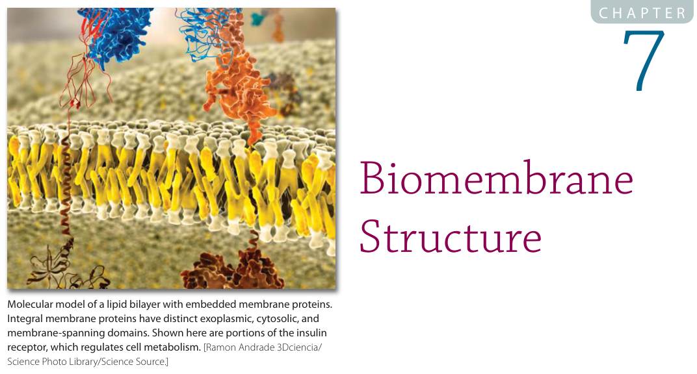
膜参与了细胞结构和功能的许多方面。质膜界定了细胞，将内部与外部隔开。在真核生物中，膜还界定了细胞内的细胞器，如细胞核、线粒体和溶酶体。这些生物膜都具有相同的基本结构：一个磷脂双层，其中嵌有蛋白质（图7-1）。磷脂双层通过阻止大多数水溶性物质不经协助地跨膜运动，充当通透性屏障，有助于维持细胞或细胞器内外之间的特征性差异；反过来，嵌入的蛋白质赋予膜特定的功能，例如对物质从一侧到另一侧的受调控运输。每种细胞膜都有自己的一套蛋白质，使其能够执行许多不同的功能。
原核生物是最简单、最小的细胞，长约1–2 μm，由单个质膜包围；在大多数情况下，它们不含内部由膜界定的亚区室（见图1-11）。然而，这个单一的质膜含有数百种不同类型的蛋白质，它们对细胞的功能至关重要。
例如，其中一些蛋白质催化ATP合成和DNA复制的起始。另一些包括许多类型的膜转运蛋白，它们使特定的离子、糖、氨基酸和维生素能够穿过本来不可通透的磷脂双层进入细胞，并使特定的代谢产物得以排出。质膜中的受体蛋白是使细胞能够识别其环境中存在的化学信号并据此调整其代谢或基因表达模式的蛋白质。
真核生物也具有质膜，上面镶嵌着许多执行各种功能的蛋白质，包括膜转运、细胞信号传导以及将细胞连接成组织。此外，真核细胞——通常比原核生物大得多——具有多种内部由膜界定的细胞器（见图1-12）。每种类型的细胞器膜都有一套独特的蛋白质，使其能够执行其特有的细胞功能，例如ATP生成（在线粒体中）和DNA合成（在细胞核中）。许多质膜蛋白还结合细胞骨架的成分，细胞骨架是一个密集的蛋白丝网络，纵横交错于胞质溶胶中，
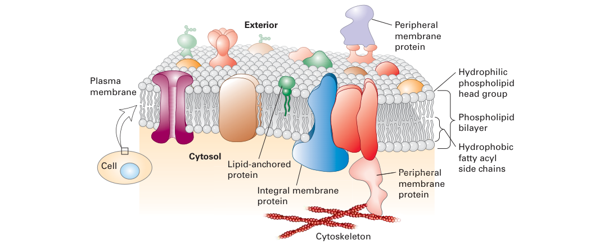
| Fluid mosaic model | 流动镶嵌模型 |
| Plasma membrane | 质膜 |
| Integral membrane protein | 整合膜蛋白 |
| Transmembrane protein | 跨膜蛋白 |
| Lipid-anchored protein | 脂锚定蛋白 |
| Peripheral membrane protein | 周边膜蛋白 |
| Phospholipid bilayer | 磷脂双层 |
| Hydrophilic head group | 亲水头基 |
| Hydrophobic fatty acyl side chain | 疏水脂肪酰基侧链 |
| Cytoskeleton | 细胞骨架 |
| Exterior | 外部 |
| Cytosol | 胞质溶胶 |
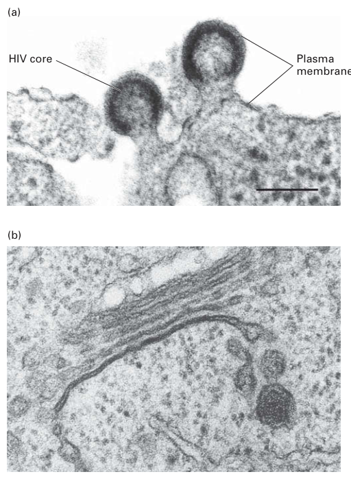
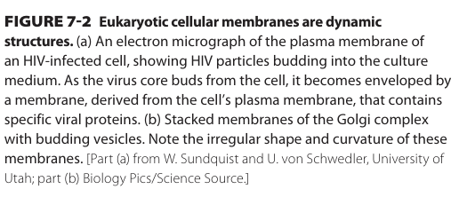
| HIV core | HIV核心 |
| Budding | 出芽 |
| Golgi complex | 高尔基体 |
| Plasma membrane | 质膜 |
为细胞膜提供机械支持。这些相互作用对于细胞呈现其特定形状以及许多类型的细胞运动都是必不可少的。
尽管膜在细胞中发挥结构性作用，但它们并非刚性结构。它们可以在三个维度上弯曲和屈伸，同时仍保持其完整性，部分原因是大量非共价相互作用将脂质和蛋白质维系在一起。此外，单个脂质和蛋白质在膜平面内具有相当大的流动性。根据20世纪70年代研究者首次提出的生物膜流动镶嵌模型，磷脂双层在某些方面表现得像二维流体，单个脂质分子能够彼此错身移动，也能原地旋转。这种流动性和柔性不仅使细胞器能够呈现其典型形状，还赋予膜动态特性，使膜出芽和融合成为可能，例如病毒从被感染细胞中释放时（图7-2a），或细胞的内部膜
高尔基体在胞质溶胶中出芽形成囊泡时（图7-2b），随后这些囊泡与其他膜融合，将其内容物从一个细胞器运输到另一个（见第14章）。
我们通过考察生物膜的脂质成分来开始对生物膜的审视。这些分子不仅影响膜的形状和功能，还帮助将蛋白质锚定到膜上、修饰膜蛋白活性，并将信号转导至细胞质。然后我们考察膜蛋白的结构。许多这类蛋白质有大部分区段嵌入磷脂双层的烃核心中，我们将聚焦于这类跨膜蛋白的主要类别。最后，我们考察磷脂和胆固醇等脂质如何在细胞中合成，并分配到其众多的膜和细胞器中。
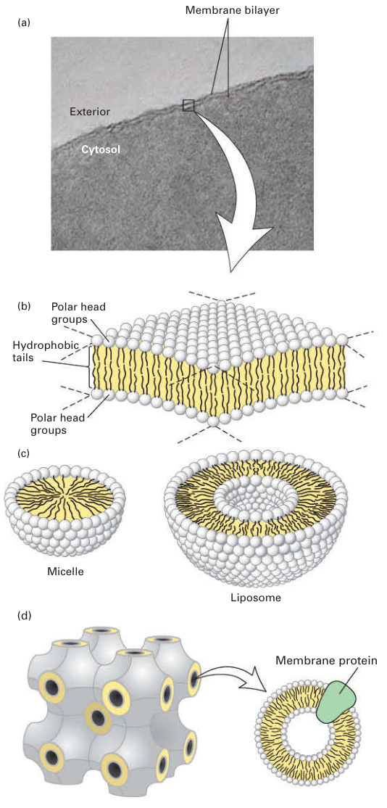
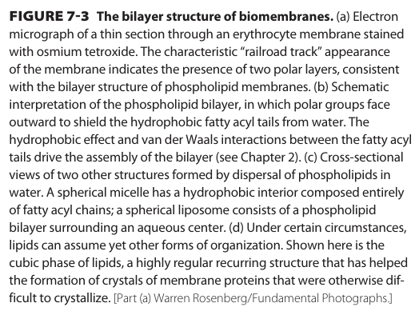
| Micelle | 胶束 |
| Liposome | 脂质体 |
| Polar head group | 极性头基 |
| Hydrophobic tail | 疏水尾部 |
| Membrane bilayer | 膜双层 |
| Membrane protein | 膜蛋白 |
| Cubic phase | 立方相 |
7.1 脂双层：组成与结构组织
在第2章中我们了解到，磷脂是生物膜的主要构建模块。膜中最常见的磷脂是磷酸甘油酯（见图2-20），但正如本章将看到的，磷脂有多种类型。所有磷脂都是两亲性分子，由两个化学性质非常不同的区段组成：一个基于脂肪酸（脂肪酰基）的烃"尾部"，它是疏水的（"恐水"）并会远离水分配；以及一个极性"头基"，它强烈亲水（"喜水"）并倾向于与水分子相互作用。磷脂彼此之间以及与水的相互作用，在很大程度上决定了生物膜的结构。
除磷脂外，生物膜还含有少量其他两亲性脂质，如糖脂和胆固醇，它们以重要方式对膜功能作出贡献。我们首先考察纯磷脂双层的结构和性质，然后讨论天然细胞膜的组成和行为。接着我们考察给定膜的精确脂质组成如何影响其物理性质。
磷脂自发形成双层
磷脂的两亲性质支配着它们的相互作用，对生物膜的结构至关重要。当磷脂悬浮液在水溶液中被机械分散时，磷脂会聚集成三种结构之一：球形胶束、脂质体，或两分子厚的片状磷脂双层（图7-3）。所形成的结构类型
取决于纯磷脂或磷脂混合物在无外加蛋白质时的情况，涉及若干因素，包括疏水尾部中脂肪酰基链的长度、它们的不饱和度（即C−C键和C=C键的数目）以及温度。在所有三种结构中，疏水效应（见第2章）都使脂肪酰基链聚集，并将水分子排除在结构的"核心"之外。胶束很少由天然磷脂形成，因为天然磷脂的脂肪酰基链通常太庞大，无法装入胶束内部。然而，如果构成磷脂尾部的两条脂肪酰基链之一被水解去除而形成溶血磷脂（如用磷脂酶处理时发生的那样），则会形成胶束。在水溶液中，常见的去污剂和肥皂形成胶束，其行为就像微型滚珠轴承中的滚珠，从而赋予肥皂溶液滑腻的手感和润滑性质。
具有细胞中存在的那种组成的磷脂混合物会自发形成对称的磷脂双层。这种层状结构中的每一层磷脂称为一个单层（leaflet）。每个单层中疏水的脂肪酰基链通过紧密排列在双层中心而最小化与水的接触，形成一个约3–4 nm厚的疏水核心（见图7-3b）。这些非极性尾部的紧密堆积由烃链之间的范德华相互作用稳定。离子键和氢键稳定极性头基彼此之间以及与水的相互作用。用四氧化锇（它与磷脂的极性头基强烈结合）染色的细胞薄切片的电子显微镜观察显示了双层结构（见图7-3a）。用四氧化锇染色的单个膜的横截面看起来像铁轨：两条细的暗线（被染色的头基复合物），其间是约2 nm的均匀亮区（疏水尾部）。磷脂双层的大小几乎不受限制——长或宽从微米（μm）到毫米（mm）——并可包含数千万个磷脂分子。磷脂双层是几乎所有生物膜的基本结构单元。其疏水核心阻止大多数水溶性物质从膜的一侧穿到另一侧。尽管生物膜含有其他分子（如胆固醇、糖脂、蛋白质），但正是磷脂双层将两种
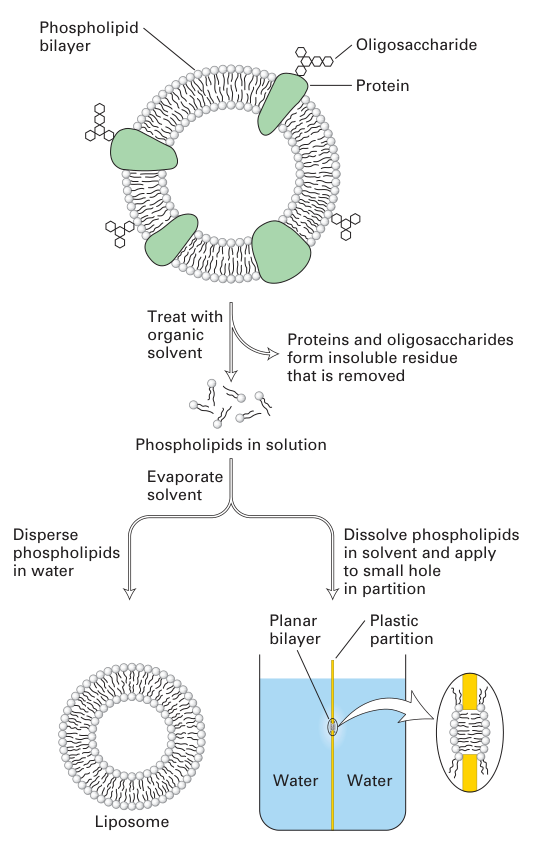
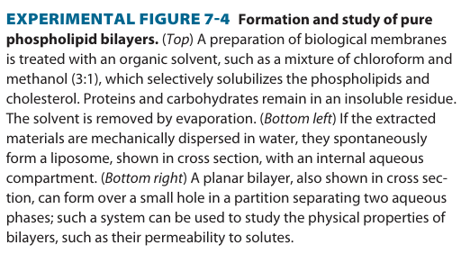
| Phospholipid bilayer | 磷脂双层 |
| Planar bilayer | 平面双层 |
| Liposome | 脂质体 |
| Organic solvent | 有机溶剂 |
| Plastic partition | 塑料隔板 |
水溶液分隔开，并充当通透性屏障。因此，脂双层界定了细胞区室，使细胞内部与外界得以分隔。
上述三种结构并非脂质在水环境中能采取的唯一形式。脂质的不寻常构型在使本来难以结晶的膜蛋白（包括G蛋白偶联受体）形成有序排列方面发挥了重要作用，使得能够在真实的脂质环境中对膜蛋白进行晶体学分析（图7-3d）。
磷脂双层形成包围内部水相空间的封闭区室
磷脂双层可以在实验室中用简单方法制备，使用化学纯的磷脂或具有细胞膜中那种组成的脂质混合物（图7-4）。这类合成双层具有三个重要性质。第一，它们几乎不可通透
水溶性（亲水性）溶质，这些溶质不容易扩散穿过双层。这些溶质包括盐、糖和大多数其他小的亲水分子——包括水本身。双层的第二个性质是其稳定性。脂肪酰基链之间的疏水相互作用和范德华相互作用维持了双层结构内部的完整性。即使外部水环境的离子强度和pH可能变化很大，双层也有能力保持其特有的结构。第三，所有合成的磷脂双层都能自发形成封闭的区室，其中内部的水相空间与外部环境分隔开来。如图7-3b所描绘的磷脂双层"边缘"，双层的烃核心暴露于水溶液，将是不稳定的；暴露的脂肪酰基链如果不与水分子相邻、而是被其他脂肪酰基链包围，将处于能量上稳定得多的状态。因此，在水溶液中，磷脂双层片层会自发封闭其边缘，形成一个包围中央水相区室的球形双层。图7-3c中所描绘的脂质体就是这种结构横截面的一个例子。
磷脂双层的这一物理化学性质对细胞膜具有重要意义：细胞中任何膜都不能有暴露烃类脂肪酰基链的"边缘"。所有膜都形成封闭区室，其基本结构与脂质体相似。由于所有细胞膜都包围着整个细胞或一个内部区室，它们都有一个内表面（朝向
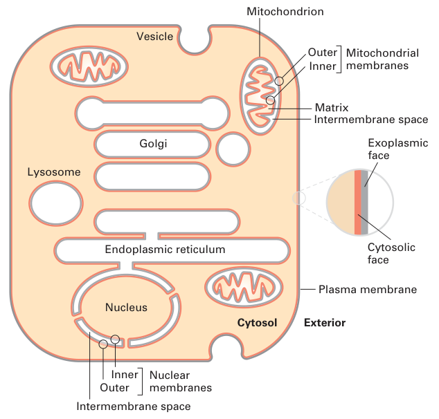
| Exoplasmic face | 外质面 |
| Cytosolic face | 胞质面 |
| Endoplasmic reticulum | 内质网 |
| Golgi | 高尔基体 |
| Lysosome | 溶酶体 |
| Nucleus | 细胞核 |
| Mitochondrion | 线粒体 |
| Intermembrane space | 膜间隙 |
| Outer membrane | 外膜 |
| Inner membrane | 内膜 |
| Matrix | 基质 |
| Vesicle | 囊泡 |
区室内部的面）和一个外表面（面向环境的面）。更常见地，我们将细胞膜的两个表面称为胞质面（cytosolic face）和外质面（exoplasmic face）。这一命名法有助于强调不同膜中各面的拓扑等价性，如图7-5和图7-6所示。例如，质膜的外质面背离胞质溶胶，朝向细胞外空间或外部环境，并界定细胞的外边界。质膜的胞质面朝向胞质溶胶。同样，对于由单层膜包围的细胞器和囊泡，其胞质面朝向胞质溶胶。外质面总是背离胞质溶胶，在这种情况下它位于细胞器内侧，与内部水相空间或腔（lumen）接触。囊泡的腔在拓扑上等价于细胞外空间，这一概念对于由质膜内陷（内吞）产生的囊泡最容易理解。质膜的外表面变成囊泡膜的内表面，而在囊泡中，质膜的胞质面仍然朝向胞质溶胶（见图7-6）。
三种细胞器——细胞核、线粒体和叶绿体——不是由单层膜包围，而是由两层膜包围。每层膜的外质面朝向两层膜之间的空间（膜间隙）。这种关系或许最好参照第12章讨论的内共生假说来理解，该假说认为线粒体和叶绿体是在真核细胞演化早期通过
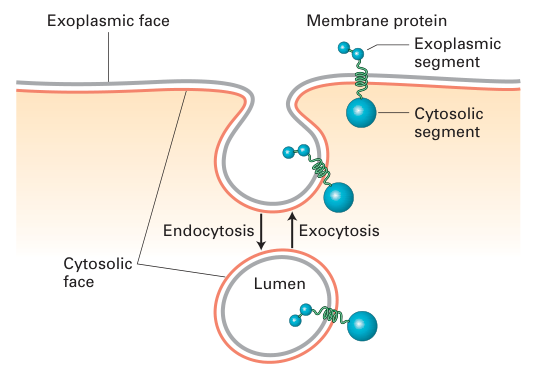
| Endocytosis | 内吞 |
| Exocytosis | 外排 |
| Lumen | 腔 |
| Exoplasmic segment | 外质区段 |
| Cytosolic segment | 胞质区段 |
分别吞入能够进行氧化磷酸化或光合作用的细菌而产生的（见图12-7）。
来自不同细胞类型的天然膜呈现出多种形状，与细胞的功能相辅相成。红细胞质膜光滑、柔韧的表面使细胞能够挤过狭窄的毛细血管（图7-7a）。有些细胞具有细长的质膜延伸结构，称为纤毛或鞭毛，它以鞭打的方式摆动（图7-7b）。这种运动使液体流过片层细胞的表面，或使精子细胞游向卵子。生物膜不同的形状和性质提出了细胞生物学中的一个关键问题，即生物膜的组成是如何被调节以建立并维持不同膜结构和膜界定区室的身份的。我们将在7.3节和第14章回到这个问题。
生物膜含有三类主要脂质
术语"磷脂"是一个有点笼统的词。它指任何具有基于磷酸的头基和双链疏水尾部的两亲性脂质。典型的生物膜并非仅由磷脂组成，实际上含有三类两亲性脂质：磷酸甘油酯、鞘脂和固醇，它们在化学结构、丰度以及在膜中的功能上各不相同
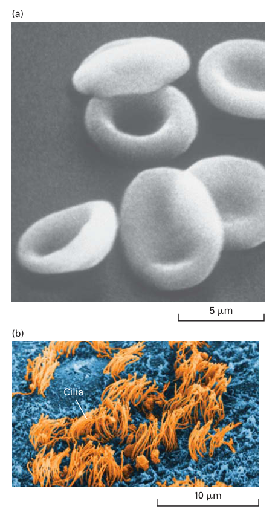
| Cilium | 纤毛 |
| Erythrocyte | 红细胞 |
| Ependymal cell | 室管膜细胞 |
| Scanning electron micrograph | 扫描电子显微照片 |
（图7-8）。虽然所有磷酸甘油酯都是磷脂，但只有某些鞘脂是，而固醇则都不是。
磷酸甘油酯是大多数膜中最丰富的一类磷脂，是3-磷酸甘油的衍生物（见图7-8a）。典型的磷酸甘油酯分子由一个疏水尾部（由两条酯化到磷酸甘油中两个羟基上的基于脂肪酸的酰基链组成）和一个连接到磷酸基团上的极性头基组成。包含甘油部分和两条脂肪酰基链的结构称为二酰甘油。两条脂肪酰基链可能在所含碳原子数（通常为16或18）和不饱和度（0、1或2个双键）上有所不同。磷酸甘油酯根据其头基的性质分类。在磷脂酰胆碱（质膜中最丰富的磷脂）中，头基由胆碱（一种带正电荷的醇）组成，
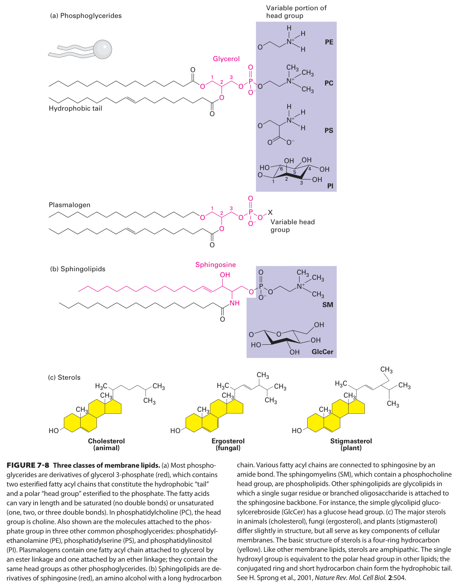
| Phosphoglyceride | 磷酸甘油酯 |
| Sphingolipid | 鞘脂 |
| Sterol | 固醇 |
| Plasmalogen | 缩醛磷脂 |
| Phosphatidylcholine (PC) | 磷脂酰胆碱 |
| Phosphatidylethanolamine (PE) | 磷脂酰乙醇胺 |
| Phosphatidylserine (PS) | 磷脂酰丝氨酸 |
| Phosphatidylinositol (PI) | 磷脂酰肌醇 |
| Sphingosine | 鞘氨醇 |
| Sphingomyelin (SM) | 鞘磷脂 |
| Glucosylcerebroside (GlcCer) | 葡糖脑苷脂 |
| Cholesterol | 胆固醇 |
| Ergosterol | 麦角固醇 |
| Stigmasterol | 豆固醇 |
| Glycerol | 甘油 |
| Hydrophobic tail | 疏水尾部 |
| Head group | 头基 |
| Saturated fatty acid | 饱和脂肪酸 |
| Unsaturated fatty acid | 不饱和脂肪酸 |
酯化到带负电荷的磷酸上。在其他磷酸甘油酯中，含OH的分子如乙醇胺、丝氨酸或糖衍生物肌醇连接到磷酸基团上。就肌醇头基而言，其羟基可进一步被磷酸修饰，产生一类称为磷酸肌醇的磷脂。磷酸肌醇在信号转导中发挥重要功能。带负电荷的磷酸基团以及头基上带正电荷的基团或羟基与水强烈相互作用。在中性pH下，某些磷酸甘油酯（如磷脂酰胆碱和磷脂酰乙醇胺）不带净电荷，而另一些（如磷脂酰肌醇和磷脂酰丝氨酸）带一个净负电荷。尽管如此，所有这些磷脂中的极性头基都能堆积成特征性的双层结构。当磷脂酶作用于磷酸甘油酯时，它们产生溶血磷脂，后者缺少两条酰基链中的一条。溶血磷脂不仅是重要的信号分子（从细胞释放并被特异性受体识别）；它们的存在还能影响其所驻留膜的物理性质。
缩醛磷脂是一组磷酸甘油酯，其中一条脂肪酰基链通过酯键连接到甘油的2号碳上，而一条长烃链通过醚键（C–O–C）而非酯键连接到甘油的1号碳上。缩醛磷脂在人脑和心脏组织中特别丰富。与酯键相比，缩醛磷脂中醚键更高的化学稳定性，以及缩醛磷脂与其他磷酸甘油酯之间三维结构的细微差异，可能具有尚未被认识的生理意义。
第二类膜脂质是鞘脂。所有这些化合物都衍生自鞘氨醇（一种带有长烃链的氨基醇），并含有一条以酰胺键连接到鞘氨醇氨基上的长链脂肪酸（见图7-8b）。像磷酸甘油酯一样，某些鞘脂具有基于磷酸的极性头基。在鞘磷脂（最丰富的鞘脂）中，磷酸胆碱连接到鞘氨醇的末端羟基上（见图7-8b，SM）。因此鞘磷脂是一种磷脂，其总体结构与磷脂酰胆碱相当相似。鞘磷脂形状与磷酸甘油酯相似，可与它们形成混合双层。其他鞘脂是两亲性糖脂，其极性头基是糖，不通过磷酸基团连接到尾部（因此在严格意义上不是磷脂）。葡糖脑苷脂是最简单的糖鞘脂，含有连接到鞘氨醇上的单个葡萄糖单元。在称为神经节苷脂的复杂糖鞘脂中，一条或两条含唾液酸基团的分支糖链（寡糖）连接到鞘氨醇上。糖脂占质膜总脂质含量的2–10%；它们在神经组织中最为丰富。
胆固醇及其类似物构成第三类重要的膜脂质——固醇。固醇的基本结构是一个基于异戊二烯的四环烃。主要的酵母固醇（麦角固醇）和植物植物固醇（如豆固醇）的结构与胆固醇（主要的动物固醇）略有不同（见图7-8c）。真菌和动物固醇在生物合成途径和结构上的微小差异，是目前使用的大多数抗真菌药物的基础。胆固醇与另外两种固醇一样，在一个环上有一个羟基取代基。尽管胆固醇在组成上几乎完全是烃，但由于其羟基能与水相互作用，它是两亲性的。由于它缺少基于磷酸的头基，它不是磷脂。胆固醇在哺乳动物细胞的质膜中特别丰富，但在大多数原核生物和所有植物细胞中都不存在。植物质膜中多达30–50%的脂质由植物特有的某些类固醇组成。在大多数哺乳动物细胞中，50%至90%的胆固醇存在于质膜及相关囊泡中。胆固醇和其他固醇太疏水，无法单独形成双层结构。相反，在天然膜中存在的浓度下，这些固醇必须插入磷脂分子之间才能被纳入生物膜。当如此插入时，固醇为膜提供结构支持，防止磷脂酰基链堆积得过于紧密，以维持相当程度的膜流动性，同时赋予机械支持所需的必要刚性。其中一些效应可以是高度局部的，如下文讨论的脂筏。
除了在膜中的结构作用外，胆固醇还是若干重要生物活性分子的前体。它们包括胆汁酸（在肝脏中制造，有助于乳化膳食脂肪以便在肠道中消化和吸收）、由内分泌细胞（如肾上腺、卵巢、睾丸）产生的类固醇激素，以及在皮肤和肾脏中产生的维生素D。胆固醇的另一个关键功能是其与Hedgehog蛋白的共价结合，Hedgehog蛋白是胚胎发育中的关键信号分子（见第16章）。
大多数脂质和许多蛋白质在生物膜中可侧向移动
在双层的二维平面内，热运动允许脂质分子围绕其长轴自由旋转，并在每个单层内作侧向扩散。由于这类运动是侧向的或旋转的，脂肪酰基链保持在双层的疏水内部。在天然膜和人工膜中，一个典型的脂质分子在单层中每秒与其邻居交换位置约10⁷次，在37 °C下每秒扩散数微米。这些扩散速率表明，双层的粘度为水的100倍——大致与橄榄油的粘度相同。尽管脂质在双层中的扩散比在水性溶剂中慢，但一个膜脂只需1秒就能扩散穿越一个典型细菌细胞的长度（1 μm），约20秒就能扩散穿越一个动物细胞的长度。当人工纯磷脂膜被冷却到37 °C以下时，脂质可以经历从液态（流体）到凝胶态（半固态）的相变，类似于液态水结冰时的液-固转变（图7-9）。在
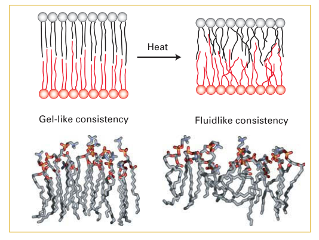
| Gel-like consistency | 类凝胶稠度 |
| Fluidlike consistency | 类流体稠度 |
| Phase transition | 相变 |
| Molecular dynamics | 分子动力学 |
相变温度以下，脂质的扩散速率急剧下降。在通常的生理温度下，天然膜的疏水内部一般具有低粘度和类流体的稠度，与较低温度下观察到的类凝胶稠度形成对比。
在纯脂质双层中（即无蛋白质时），磷脂和鞘脂旋转并侧向移动，但它们不会自发地从一层单层迁移（或翻转，flip-flop）到另一层。能垒太高；迁移需要将极性头基从其水性环境穿过双层的烃核心移到另一侧的水溶液中。第11章讨论的特殊膜蛋白是使膜脂质和其他极性分子从一层单层翻转到另一层所必需的。
特定质膜蛋白和脂质的侧向运动可以通过一种称为光漂白后荧光恢复（FRAP）的技术来定量。含有荧光取代基的磷脂被用来监测脂质运动。对于蛋白质，一种针对目标蛋白外质结构域、且只有一个抗原结合位点的单克隆抗体片段被标记上荧光染料。用这种方法（在图7-10中描述），可以测定膜分子移动的速率——即扩散系数——以及侧向可移动分子的比例。
用荧光标记磷脂进行的FRAP研究结果表明，在成纤维细胞质膜中，所有磷脂在约0.5 μm的距离内都可自由移动，但大多数不能扩散更长的距离。这些发现提示，质膜中直径约1 μm的富含蛋白质的区域将含有大部分膜磷脂的富含脂质区域分隔开。磷脂可以在这样的区域内自由扩散，但不能从一个富含脂质区域扩散到相邻的一个。此外，质膜中脂质的侧向扩散速率比纯磷脂双层中慢了近一个数量级：质膜和纯磷脂双层的特征扩散常数分别为10⁻⁸ cm²/s和10⁻⁷ cm²/s。这一差异提示，在某些膜中，脂质可能紧密但不可逆地结合于某些整合蛋白，这最近确实已得到证明（见下文关于环形磷脂的讨论）。
脂质组成影响膜的物理性质
一个典型的细胞含有许多不同类型的膜，每种膜都具有由其特定脂质和蛋白质组合所衍生的独特性质。表7-1中的数据说明了不同生物膜中脂质组成的变化。有几种现象造成了这些差异。例如，磷酸甘油酯和鞘脂的相对丰度在内质网（ER，磷脂在此合成）和高尔基体（鞘脂在此合成）的膜之间有所不同。高尔基体膜中鞘磷脂占总膜脂质磷的比例约为ER膜的六倍。在其他情况下，膜从一个细胞区室到另一个区室的移动可以选择性地使某些膜富含胆固醇等脂质。为了应对整个生物体中的不同环境，不同类型的细胞产生具有不同脂质组成的膜。例如，在衬于肠道的细胞中，面向消化膳食营养素这一严酷环境的膜，其鞘脂:磷酸甘油酯:胆固醇之比为1:1:1，而不是受到较小压力的细胞中的0.5:1.5:1。这些肠膜中相对较高的鞘脂浓度可能因其鞘氨醇部分中游离–OH基团的大量氢键作用而增加其稳定性（见图7-8）。
双层的流动性程度取决于脂质组成、磷脂疏水尾部的结构以及温度。如前所述，范德华相互作用和疏水效应使磷脂的非极性尾部聚集。长的饱和脂肪酰基链聚集倾向最强，紧密堆积成类凝胶状态。脂肪酰基链短的磷脂表面积更小，因而范德华相互作用更少，形成更流体的双层。同样，顺式不饱和脂肪酰基链中的扭结（见第2章）导致它们与其他脂质形成较不稳定的范德华相互作用，因而形成更流体的双层，
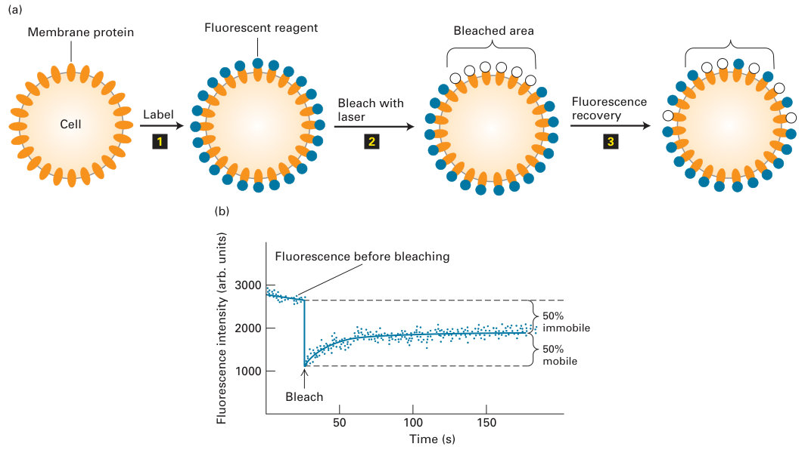
| Fluorescence recovery after photobleaching (FRAP) | 光漂白后荧光恢复 |
| Fluorescent reagent | 荧光试剂 |
| Bleached area | 漂白区域 |
| Diffusion coefficient | 扩散系数 |
| Asialoglycoprotein receptor | 去唾液酸糖蛋白受体 |
| Hepatoma cell | 肝癌细胞 |
相比之下，直的饱和链可以更紧密地堆积在一起。
胆固醇在维持天然膜的适当流动性方面很重要，这一特性似乎是正常细胞生长和繁殖所必需的。胆固醇限制单层外表面磷脂头基的随机运动，但其对长磷脂尾部运动的影响取决于其浓度。在质膜中通常存在的胆固醇浓度下，固醇环与磷脂长疏水尾部的相互作用倾向于固定这些脂质，从而降低生物膜流动性。正是这一性质有助于将质膜组织成具有独特脂质和蛋白质组成的离散亚结构域。然而，在较低的胆固醇浓度下，固醇环分隔并分散磷脂尾部，使膜的内层区域变得稍微更具流动性。
双层的脂质组成还影响其厚度，进而可能影响其他膜成分（如蛋白质）在特定膜中的分布。有人提出，某些驻留高尔基体的酶（糖基转移酶）相对较短的跨膜区段是对高尔基体膜脂质组成的一种适应，并有助于这些酶滞留在高尔基体中。对人工膜的生物物理研究结果表明，鞘磷脂缔合成比磷酸甘油酯更类凝胶、更厚的双层（图7-11a）。胆固醇和其他降低膜流动性的分子也会增加膜双层厚度。由于鞘磷脂尾部已经处于最佳稳定状态，添加胆固醇对鞘磷脂双层的厚度没有影响。
另一个取决于双层脂质组成的性质是其曲率，这取决于其组成磷脂中极性头基与非极性尾部的相对大小。具有长尾和大头基的脂质呈圆柱形；头基小的则呈锥形（图7-11b）。因此，由
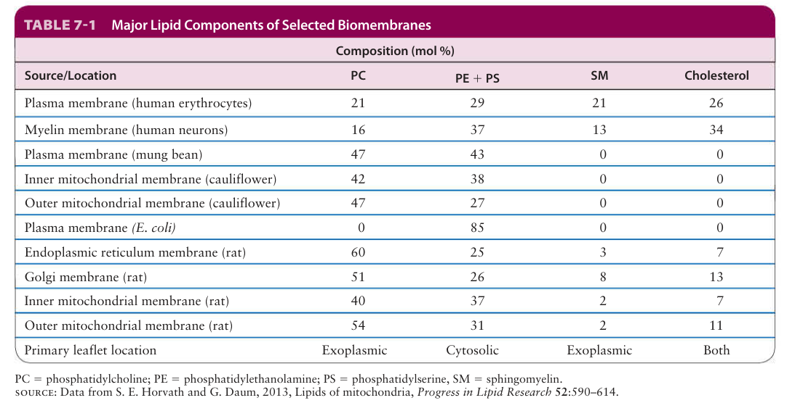
| Phosphatidylcholine (PC) | 磷脂酰胆碱 |
| Phosphatidylethanolamine (PE) | 磷脂酰乙醇胺 |
| Phosphatidylserine (PS) | 磷脂酰丝氨酸 |
| Sphingomyelin (SM) | 鞘磷脂 |
| Cholesterol | 胆固醇 |
| Exoplasmic leaflet | 外质单层 |
| Cytosolic leaflet | 胞质单层 |
| Myelin membrane | 髓鞘膜 |
| Inner mitochondrial membrane | 线粒体内膜 |
| Outer mitochondrial membrane | 线粒体外膜 |
圆柱形脂质组成的双层相对平坦，而含有大量锥形脂质的双层则形成弯曲的双层（图7-11c）。脂质组成对双层曲率的这种影响可能在高度弯曲的膜的形成中发挥作用，例如病毒出芽位点（见图7-2）
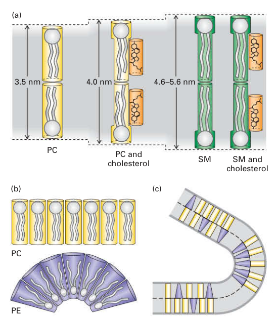
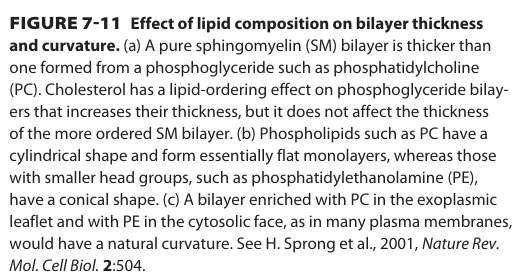
| Bilayer thickness | 双层厚度 |
| Bilayer curvature | 双层曲率 |
| Cylindrical shape | 圆柱形 |
| Conical shape | 锥形 |
| Lipid ordering | 脂质有序化 |
以及从质膜形成内部囊泡（见图7-6），以及在诸如微绒毛这样的特化稳定膜结构中发挥作用。若干蛋白质结合到磷脂双层表面并使膜弯曲；这类蛋白质在从供体膜出芽形成运输囊泡的过程中很重要（见第14章）。
外质单层与胞质单层中的脂质组成不同
所有生物膜的一个特征是脂质组成跨双层的不对称性。尽管大多数磷脂存在于两个膜单层中，但有些通常在一个或另一个单层中更丰富。例如，在人类红细胞和培养的Madin-Darby犬肾（MDCK）细胞的质膜中，几乎所有的鞘磷脂和磷脂酰胆碱（两者都形成流动性较低的双层）都位于外质单层。相反，磷脂酰乙醇胺、磷脂酰丝氨酸
和磷脂酰肌醇（它们形成流动性更高的双层）则优先位于胞质单层。由于磷脂酰丝氨酸和磷脂酰肌醇带净负电荷，具有单个跨膜区段的膜蛋白在胞质面的氨基酸片段，往往在紧邻跨膜区段处富含带正电荷的（Lys、Arg）残基（这种带电氨基酸的分布被称为"内侧为正"规则）。脂质跨双层的这种分隔可能影响膜曲率（见图7-11c）。与特定磷脂不同，胆固醇在细胞膜的两个单层中分布相对均匀。
特定磷脂在质膜两个单层中的相对丰度可以基于磷脂对磷脂酶水解的敏感性来实验测定，磷脂酶是切割酰基链和头基与脂质分子相连的酯键的酶（图7-12）。当加入外部介质时，磷脂酶不能穿过膜，因此它们只切下存在于外质面的那些脂质的头基；胞质单层中的磷脂对水解有抗性，因为酶无法穿透到质膜的胞质面。
膜单层中磷脂不对称分布是如何产生的仍不清楚。如前所述，在纯双层中，磷脂不会自发地从一层单层迁移或翻转（flip-flop）到另一层。部分原因可能是，磷脂分布的不对称反映了这些脂质在内质网和高尔基体中合成的部位。鞘磷脂在高尔基体的腔面（外质面）合成，该面成为质膜的外质面。相反，磷酸甘油酯在
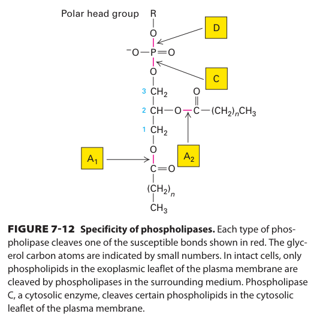
| Phospholipase | 磷脂酶 |
| Phospholipase A2 | 磷脂酶A2 |
| Phospholipase C | 磷脂酶C |
| Polar head group | 极性头基 |
| Ester bond | 酯键 |
ER膜的胞质面合成，该面在拓扑上等价于质膜的胞质面（见图7-5）。然而，这一解释显然无法说明磷脂酰胆碱（一种磷酸甘油酯）优先位于外质单层。这种磷酸甘油酯（也许还有其他）在某些天然膜中从一层单层到另一层的移动，最可能是由称为翻转酶（flippases）的ATP驱动转运蛋白催化的，将在第11章讨论。
脂质优先位于双层的某一面对多种基于膜的功能是必需的。例如，磷脂酰肌醇（PI；见图7-8）所有磷酸化形式的头基都朝向胞质溶胶。PI是第二信使的重要来源。许多细胞表面受体被其相应配体刺激后，会激活胞质酶磷脂酶C，后者随后可水解PI中连接磷酸肌醇与二酰甘油的键。正如我们将在第15章看到的，水溶性磷酸肌醇和膜内嵌的二酰甘油都参与影响细胞代谢许多方面的胞内信号通路。磷脂酰丝氨酸通常也主要存在于质膜的胞质单层。在血清刺激血小板的初始阶段，磷脂酰丝氨酸被短暂地转运到外质面（推测由翻转酶完成），在那里它激活参与血液凝固的酶。当细胞死亡时，脂质不对称性不再维持，通常富集于胞质单层的磷脂酰丝氨酸越来越多地出现在外质单层。这种暴露增加可通过使用膜联蛋白V（annexin V，一种特异性结合磷脂酰丝氨酸的蛋白质）的标记版本来实验检测，以测量程序性细胞死亡（凋亡）的发生。垂死或死亡细胞上磷脂酰丝氨酸暴露的增加被吞噬细胞识别，后者启动对这类凋亡小体的吞噬，从而确保细胞残骸被及时安全地清除。
胆固醇和鞘脂在膜微结构域中与特定蛋白质聚集
膜脂质在双层的每个单层中并非随机分布（均匀混合）。脂质可能在单层内组织化的一个线索是这样一个发现：用Triton X-100等非离子去污剂提取（增溶）质膜后残留的脂质主要含有两种：胆固醇和鞘磷脂。由于这两种脂质存在于更有序、流动性更低的双层中，研究者推测它们形成称为脂筏（lipid rafts）的微结构域，被其他更容易被非离子去污剂提取的、流动性更高的磷脂包围。（我们将在7.2节更充分地讨论离子型和非离子型去污剂在提取膜蛋白中的作用。）
一些生化和显微证据支持脂筏的存在，在天然膜中
它们通常直径50 nm。脂筏可被甲基-β-环糊精（它特异性地从膜中提取胆固醇）或被诸如菲律宾菌素（filipin）这类将胆固醇螯合成膜内聚集体的抗生素破坏。这些发现表明胆固醇在维持脂筏完整性中的重要性。这些脂筏组分（以其在非离子去污剂中的不溶性来定义）含有质膜蛋白的一个子集，其中许多与感知细胞外信号并将其传递到胞质溶胶有关。由于脂筏组分富含糖脂，对完整细胞中脂筏型结构进行显微可视化的重要工具是使用荧光标记的霍乱毒素，这是一种特异性结合某些神经节苷脂的蛋白质。通过将许多关键蛋白质聚集在一起并稳定它们的相互作用，脂筏可能促进细胞表面受体的信号传导以及随后胞质事件的激活。然而，关于脂筏的结构和生物学功能仍有许多有待了解。某些脂筏相关脂质（如糖脂）的独特性质可能允许它们的尾部跨疏水核心相互作用，并帮助组织胞质单层的脂质以形成信号平台。
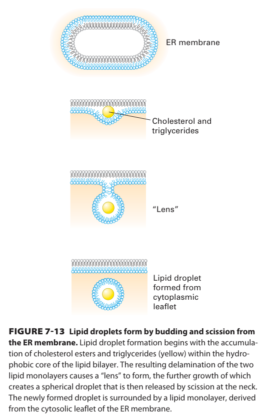
| Lipid droplet | 脂滴 |
| ER membrane | ER膜 |
| Cholesterol ester | 胆固醇酯 |
| Triglyceride | 甘油三酯 |
| Cytoplasmic leaflet | 胞质单层 |
| Lipid monolayer | 脂质单层 |
细胞将多余的脂质储存在脂滴中
脂滴是囊泡状结构，由甘油三酯和胆固醇酯组成，起源于ER，具有脂质储存功能。当细胞的脂质供应超过膜构建的即时需要时，多余的脂质被转移到这些脂滴中，可用刚果红等亲脂性染料染色在活细胞中轻易观察到。用油酸（一种脂肪酸）喂养细胞会促进脂滴形成。脂滴不仅是甘油三酯和胆固醇酯的储存区室，还可能作为待降解蛋白质的储存平台。脂滴的生物发生始于通过插入甘油三酯和胆固醇酯使ER的脂质双层分层（图7-13）。脂质"透镜"通过插入更多脂质继续生长，直到最终通过从ER上断裂而孵化出一个脂滴。由此产生的细胞质脂滴因而被一个磷脂单层包围。脂滴生物发生的细节及其功能仍有待更清晰地界定。
- 膜对细胞结构和功能至关重要。真核细胞通过质膜与外部环境划界，并组织成由膜界定的内部区室（细胞器和囊泡）。
- 磷脂双层是所有生物膜的基本结构单元，是一种双层脂质片层，具有亲水面和疏水核心，对水溶性分子和离子不可通透。嵌入双层的蛋白质赋予膜特定功能（见图7-1）。
- 磷脂自发形成双层以及包围水相空间的封闭区室（见图7-3）。
- 作为双层，所有生物膜都有一个内部（胞质）面和一个外部（外质）面（见图7-5）。有些细胞器由两层而非一层膜双层包围。
- 生物膜的主要脂质成分是磷酸甘油酯、鞘脂和诸如胆固醇的固醇。术语"磷脂"适用于任何具有脂肪酰基烃尾部和基于磷酸的极性头基的两亲性脂质分子（见图7-8）。
- 生物膜可以随温度和膜组成的不同而经历从类流体到类凝胶态的相变（见图7-9）。
- 大多数脂质和许多蛋白质在生物膜中可侧向移动（见图7-10）。
r 不同细胞膜的脂质组成各不相同（见表7-1）。磷脂和鞘脂在双层两个单层中不对称分布，而胆固醇在两个单层中分布相当均匀。
r 天然生物膜一般具有粘稠的稠度和类流体性质。一般来说，膜流动性被鞘脂和胆固醇降低，被磷酸甘油酯提高。膜的脂质组成还影响其厚度和曲率（见图7-11）。
r 脂筏是含有胆固醇、鞘脂和某些膜蛋白的微结构域，在双层平面内形成。这些脂质-蛋白质聚集体可能促进某些质膜受体的信号传导。
r 脂滴是脂质的储存囊泡，起源于ER（见图7-13）。
7.2 膜蛋白：结构与基本功能
膜蛋白由其位于磷脂双层之内或表面的位置来定义。尽管每一种生物膜都具有相同的基本双层结构，但与特定膜相关联的蛋白质决定了它独特的功能活动。与生物膜相关联的蛋白质的种类和数量因细胞类型和亚细胞位置而异。例如，线粒体内膜含76%的蛋白质；而包围神经轴突的髓鞘膜仅含18%。髓鞘的高磷脂含量使其能够将神经与其环境电绝缘，正如我们将在第22章讨论的。膜蛋白的重要性从以下发现中显而易见：约三分之一的酵母基因编码膜蛋白。在多细胞生物中，膜蛋白基因的相对丰度甚至更高，因为膜蛋白在细胞黏附和不同细胞类型之间的通讯（细胞-细胞相互作用）中具有额外功能。
脂双层为膜蛋白提供了一个独特的二维疏水环境。有些蛋白质含有嵌入磷脂双层疏水核心内的区段；另一些蛋白质则与双层的外质单层或胞质单层相关联。质膜胞外表面的蛋白质结构域通常结合细胞外分子，包括外部信号蛋白、离子和小代谢物（如葡萄糖、脂肪酸），以及其他细胞上或外部环境中的蛋白质。质膜内的蛋白质区段执行多种功能，例如形成分子和离子进出细胞的通道和孔。这些膜内区段还起到将多种膜蛋白组织成膜平面内更大组装体的作用。位于质膜胞质面的结构域具有广泛的功能，从将细胞骨架蛋白锚定到膜上，到触发胞内信号通路。
在许多情况下，膜蛋白的功能及其多肽链在膜中的拓扑结构，可以根据其与其他已被充分表征的蛋白质的相似性来预测。在本节中，我们考察膜蛋白的特征性结构特点及其一些基本功能。我们描述几种蛋白质的结构，以帮助你体会膜蛋白与膜相互作用的方式。各种类型膜蛋白性质的更完整表征，将在后续聚焦于其结构、活性及其细胞功能背景的章节中呈现。
蛋白质以三种不同方式与膜相互作用
膜蛋白可根据其相对于膜的位置分为三类——整合、脂锚定和周边（见图7-1）。整合膜蛋白，也称为跨膜蛋白，跨越磷脂双层，由三个结构域组成。胞质结构域和外质结构域具有亲水的外表面，与膜胞质面和外质面的水性环境相互作用。这些结构域在氨基酸组成和结构上类似于其他水溶性蛋白质的区段。相反，跨膜区段通常含有许多疏水氨基酸，其侧链向外突出，与磷脂双层的疏水烃核心相互作用。在迄今为止研究过的所有跨膜蛋白中，跨膜结构域都由一个或多个α螺旋或多个β链组成。我们在第5章和第10章讨论可溶性胞质蛋白的核糖体合成和翻译后加工；整合膜蛋白在合成过程中被插入膜的过程将在第13章讨论。
脂锚定膜蛋白共价结合于一个或多个脂质分子。所连接脂质的疏水尾部嵌入膜的一个单层中，将蛋白质锚定到膜上。多肽链本身并不进入磷脂双层。
周边膜蛋白不直接接触磷脂双层的疏水核心。相反，它们或通过与整合膜蛋白或脂锚定膜蛋白相互作用而间接结合于膜，或通过与脂质头基相互作用而直接结合。周边蛋白可以结合到质膜的胞质面或外质面。除了这些与双层紧密关联的蛋白质外，细胞骨架丝还可以更松散地与胞质面关联，通常通过一个或多个周边衔接蛋白。这种与细胞骨架的关联为各种细胞膜提供支持，有助于决定细胞的形状和机械性质，并在细胞内部与外部之间的双向通讯中发挥作用，正如我们将在第17章学到的。最后，质膜外表面上的周边蛋白
以及整合膜蛋白的外质结构域，常常连接到细胞外基质的成分或包围细菌和植物细胞的细胞壁，提供细胞与其环境之间的关键界面。
大多数跨膜蛋白具有跨膜α螺旋
可溶性蛋白质表现出数百种不同的局部折叠结构或基序（见图3-10）。相比之下，整合膜蛋白跨膜结构域中折叠结构的种类相当有限，以疏水α螺旋为主。含有跨膜α螺旋结构域的蛋白质稳定地嵌入膜中，这是由于该结构域中疏水侧链与特定脂质之间能量上有利的疏水相互作用和范德华相互作用，可能还因为与磷脂极性头基之间的离子相互作用。
单个α螺旋结构域就足以将整合膜蛋白整合到膜中。然而，许多这类蛋白质有不止一个跨膜α螺旋。通常，一个膜内嵌的α螺旋由20–25个疏水（不带电）氨基酸的连续区段组成
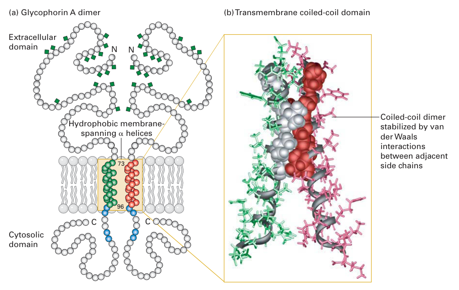
| Glycophorin A | 血型糖蛋白A |
| Single-pass transmembrane protein | 单次跨膜蛋白 |
| Extracellular domain | 胞外结构域 |
| Cytosolic domain | 胞质结构域 |
| Coiled-coil dimer | 卷曲螺旋二聚体 |
| Van der Waals interaction | 范德华相互作用 |
| Membrane-spanning helix | 跨膜螺旋 |
| Glycosylation | 糖基化 |
（见图2-14）。这样一个α螺旋的预测长度（3.75 nm）刚好足以跨过磷脂双层的烃核心。在许多膜蛋白中，这些螺旋垂直于膜平面，而在另一些中，螺旋以斜角穿过膜。疏水侧链从螺旋向外突出，与双层中的脂肪酰基链形成范德华相互作用。相反，亲水的酰胺肽键位于α螺旋内部（见图3-4）；每个羰基（C=O）与朝向螺旋C端第四个残基的氨基酸酰胺氢原子形成氢键。这些极性基团被遮蔽，不与膜的疏水内部接触。
为了帮助你更好地体会具有α螺旋结构域的蛋白质的结构，我们将简要讨论四种此类蛋白质：血型糖蛋白A、G蛋白偶联受体、水通道蛋白（水/甘油通道）以及T细胞抗原受体。
血型糖蛋白A是红细胞质膜中的主要蛋白质，是代表性的单次跨膜蛋白，只含有一个跨膜α螺旋（图7-14a）。这个23个残基的跨膜
α螺旋由具有疏水（不带电）侧链的氨基酸组成，这些侧链与周围双层中的脂肪酰基链相互作用。在细胞中，血型糖蛋白A通常形成二聚体：一条血型糖蛋白A多肽的跨膜螺旋与第二条血型糖蛋白A中相应的跨膜螺旋结合，形成卷曲螺旋结构（图7-14b）。跨膜α螺旋的这种相互作用是产生二聚体膜蛋白的常见机制，许多膜蛋白通过其跨膜螺旋之间的相互作用形成寡聚体（非共价结合在一起的两条或多条多肽）。
一类庞大而重要的整合膜蛋白以存在七个跨膜α螺旋为特征。这一类包括第15章讨论的G蛋白偶联细胞表面受体大家族，其中许多已被结晶。一种结构已知的此类多次跨膜蛋白是细菌视紫红质，它存在于某些光合细菌的膜中；它展示了所有这类蛋白质的一般结构（图7-15a）。共价连接于该蛋白质的视黄醛基团吸收光，引起蛋白质构象变化，导致质子从胞质溶胶泵过细菌膜到细胞外空间。由此在膜两侧产生的质子浓度梯度在光合作用中用于合成ATP（见第12章）。在细菌视紫红质的高分辨率结构中，所有单个氨基酸的位置、视黄醛基团以及周围的
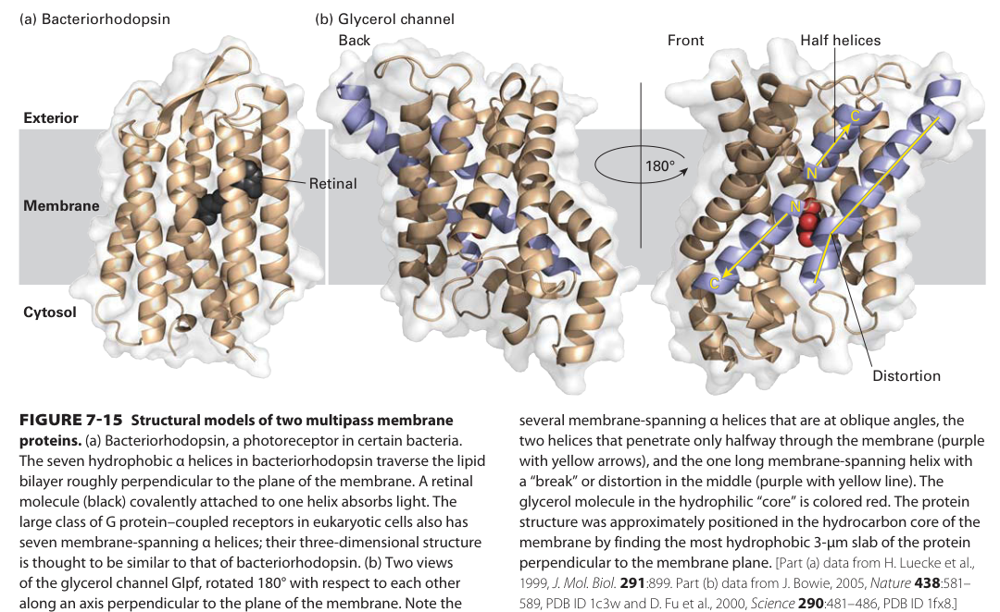
| Bacteriorhodopsin | 细菌视紫红质 |
| Retinal | 视黄醛 |
| G protein-coupled receptor | G蛋白偶联受体 |
| Glycerol channel | 甘油通道 |
| Aquaporin | 水通道蛋白 |
| Multipass transmembrane protein | 多次跨膜蛋白 |
| Half helix | 半螺旋 |
脂质都清晰可辨。正如所料，细菌视紫红质跨膜区段外部的几乎全部氨基酸都是疏水的，从而能与周围脂双层的烃核心发生能量上有利的相互作用。
水通道蛋白是一个高度保守蛋白质的大家族，负责跨生物膜运输水、甘油和其他亲水分子。它们展示了多次跨膜蛋白结构的若干方面。水通道蛋白是四个相同亚基的四聚体。四个亚基中的每一个都有六个跨膜α螺旋，其中一些以斜角而非垂直方式穿过膜。由于所有水通道蛋白结构相似，我们将聚焦于其中之一——甘油通道Glpf，其结构已通过X射线衍射研究得到特别明确的解析（图7-15b）。这种水通道蛋白有一条中间弯曲的长跨膜螺旋，更引人注目的是，有两个α螺旋只穿透膜的一半。这些螺旋的N端彼此相对（图中黄色的N），它们一起以斜角跨越膜。因此，某些膜内嵌的螺旋——以及我们稍后将遇到的另一些非螺旋结构——并不贯穿整个双层。正如我们将在第11章看到的，水通道蛋白中这些短螺旋构成每个亚基中部甘油/水选择性孔道的一部分。这一结构凸显了跨膜α螺旋与脂双层以及蛋白质其他区段相互作用方式的相当大的多样性。
磷脂-蛋白质相互作用的特异性从另一种水通道蛋白——水通道蛋白0的结构中可见一斑（图7-16）。水通道蛋白0是构成哺乳动物眼晶状体主体的纤维细胞质膜中最丰富的蛋白质。像其他水通道蛋白一样，它是相同亚基的四聚体。该蛋白质的表面并非覆盖着一组均匀的磷脂分子结合位点。相反，脂肪酰基链紧密贴靠蛋白质不规则的疏水外表面。参与这种相互作用的脂质被称为环形磷脂（annular phospholipids），因为它们在蛋白质周围形成一圈紧密的脂质环（annulus），不易与双层中的大量磷脂交换。其中一些脂肪酰基链是直的，处于反式构象（见第2章），而另一些则发生扭结，以便与蛋白质表面庞大的亲水侧链相互作用。有些脂质头基平行于膜表面，如同纯磷脂双层中的情况。然而另一些则几乎与膜平面成直角取向。因此，磷脂与跨膜蛋白之间可以存在特异性相互作用，许多膜蛋白的功能可能受到双层中存在的特定类型磷脂的影响。
除了主要起疏水（不带电）作用的残基将整合膜蛋白嵌入双层外
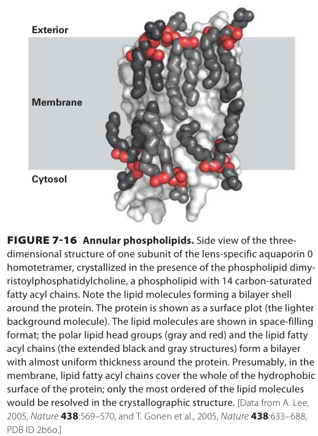
| Annular phospholipid | 环形磷脂 |
| Aquaporin 0 | 水通道蛋白0 |
| Dimyristoylphosphatidylcholine | 二肉豆蔻酰磷脂酰胆碱 |
| Homotetramer | 同源四聚体 |
| Lens fiber cell | 晶状体纤维细胞 |
许多α螺旋跨膜区段还含有极性或带电残基。它们的氨基酸侧链可用于引导多聚体膜蛋白的组装和稳定。T细胞抗原受体就是一个例子：它由四个独立的二聚体组成，其相互作用由脂双层烃核心中适当"深度"处α螺旋之间的电荷-电荷相互作用驱动（图7-17）。每个二聚体上正负电荷的静电吸引帮助二聚体"找到彼此"。因此，原本疏水的跨膜区段中的带电残基可以帮助引导多聚体膜蛋白的组装。
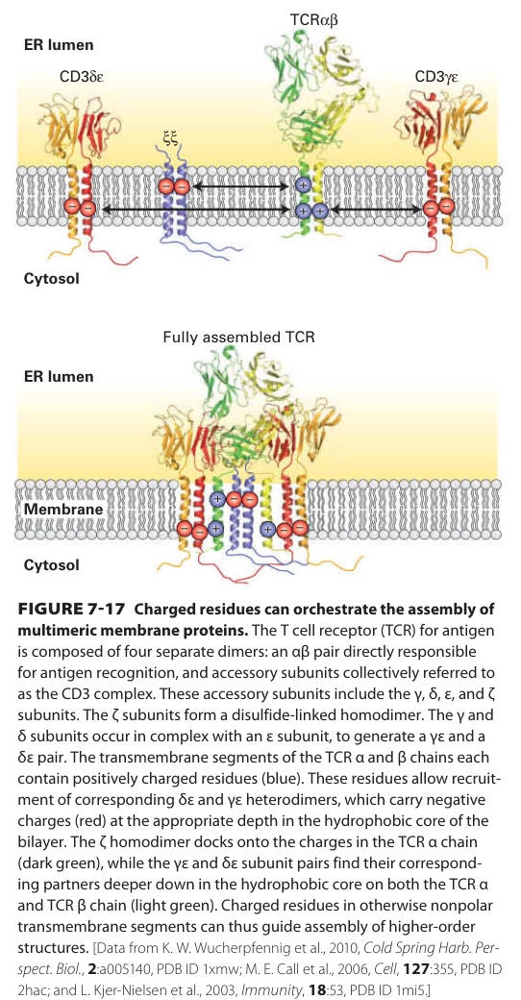
| T cell receptor (TCR) | T细胞受体 |
| CD3 complex | CD3复合体 |
| Charged residue | 带电残基 |
| Heterodimer | 异源二聚体 |
| Homodimer | 同源二聚体 |
| ER lumen | ER腔 |
孔蛋白中的多条β链形成跨膜"桶"
孔蛋白是一类跨膜蛋白，其结构与其他基于α螺旋跨膜结构域的整合膜蛋白截然不同。在诸如大肠杆菌等革兰氏阴性菌的外膜中，以及线粒体和叶绿体的外膜中，存在若干类型的孔蛋白。外膜保护肠道细菌免受有害物质（如抗生素、胆盐和蛋白酶）的侵害，但允许小亲水分子（包括营养物质和废物）的摄取和排出。大肠杆菌细胞外膜中不同类型的孔蛋白为特定类型的双糖或其他小分子以及磷酸根等离子提供通道。孔蛋白的氨基酸序列不含α螺旋跨膜结构域整合膜蛋白所典型具有的长连续疏水区段。相反，正是完全折叠的孔蛋白的整个外表面向脂双层的烃核心展示其疏水特征。X射线晶体学显示，孔蛋白是相同亚基的三聚体。在每个亚基中，16条β链形成片层，扭转为中央有孔的桶状结构（图7-18）。与典型的水溶性
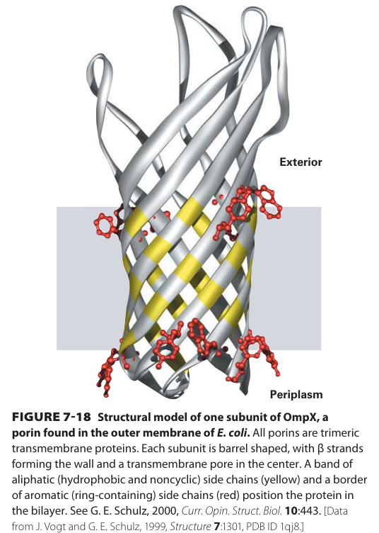
| Porin | 孔蛋白 |
| Beta barrel | β桶 |
| OmpX | OmpX |
| Gram-negative bacteria | 革兰氏阴性菌 |
| Outer membrane | 外膜 |
| Periplasm | 周质 |
| Aliphatic side chain | 脂肪族侧链 |
| Aromatic side chain | 芳香族侧链 |
球状蛋白不同，孔蛋白具有亲水内部和疏水外部；在这个意义上，孔蛋白是里外翻转的。在孔蛋白单体中，每条β链上面向外的侧链是疏水的，形成一条环绕桶外侧的非极性带状结构。这条疏水带与膜脂质的脂肪酰基或与其他孔蛋白单体相互作用。面向孔蛋白单体内部的侧链主要是亲水的；它们衬在孔道内壁，小分子水溶性物质由此穿过膜。（请注意，上文讨论的水通道蛋白尽管名称相似，但并非孔蛋白，它们含有多个跨膜α螺旋。）
共价连接的脂质将某些蛋白质锚定到膜上
在真核细胞中，共价连接的脂质将一些本来典型的水溶性蛋白质锚定到膜的两层单层之一。在这类脂锚定蛋白中，脂质锚的烃链嵌入双层，但蛋白质本身并不进入双层。用于将蛋白质锚定到胞质面的脂质锚不用于外质面，反之亦然。
一组胞质蛋白通过共价连接在N端甘氨酸残基上的脂肪酰基（如肉豆蔻酰基或棕榈酰基）锚定到膜的胞质面，这种修饰称为酰化（图7-19a）。通过N端酰基锚将这些蛋白质保留在膜上，可能对膜相关功能起重要作用。例如，v-Src（细胞酪氨酸激酶的一种突变形式）会诱导可导致癌症的异常细胞生长，但只有在它具有肉豆蔻酰化的N端时才会如此。
第二组胞质蛋白通过连接在C端或C端附近半胱氨酸残基上的烃链锚定到膜上，这种修饰称为异戊二烯化（图7-19b）。异戊二烯锚由5碳异戊二烯单元构建，如下一节详述，这些单元也用于胆固醇的合成。在异戊二烯化中，一个15碳的法尼基或20碳的香叶基香叶基通过硫醚键结合到蛋白质C端半胱氨酸残基的–SH基团上，该残基通常是C端Cys-Ala-Ala-X（X = 多种氨基酸中的任意一种）或CAAX盒的一部分。一旦发生异戊二烯化，C端Ala-Ala-X基序可能被蛋白酶解去除。在某些情况下，第二个香叶基香叶基或脂肪酰基棕榈酸基连接到附近的半胱氨酸残基上。额外的烃锚被认为可加强蛋白质与膜的附着。例如，Ras（一种在胞内信号传导中发挥作用的GTP酶超家族蛋白，见第15章）就是通过这样的双锚被招募到质膜的胞质面。同属GTP酶超家族的Rab蛋白，同样通过异戊二烯锚结合到胞内囊泡的胞质表面；这些蛋白质是囊泡与其靶
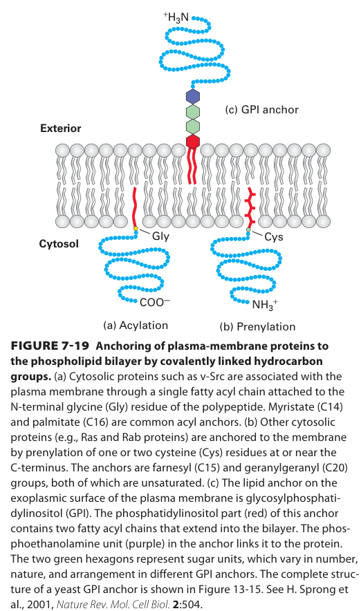
| Acylation | 酰化 |
| Prenylation | 异戊二烯化 |
| GPI anchor | GPI锚 |
| Glycosylphosphatidylinositol (GPI) | 糖基磷脂酰肌醇 |
| Myristate | 肉豆蔻酸 |
| Palmitate | 棕榈酸 |
| Farnesyl | 法尼基 |
| Geranylgeranyl | 香叶基香叶基 |
| v-Src | v-Src |
| Ras | Ras |
| Rab protein | Rab蛋白 |
| Proteoglycan | 蛋白聚糖 |
膜融合所必需的（见第14章）。还有其他蛋白质在没有其他脂质修饰的情况下，在近膜半胱氨酸残基上被棕榈酰化。
一些细胞表面蛋白，以及一些带有独特共价连接多糖（称为蛋白聚糖，见第20章）的特化蛋白质，通过第三类锚——糖基磷脂酰肌醇（GPI）锚——结合到质膜的外质面。GPI锚的确切结构在不同细胞类型之间差异很大，但它们总是含有磷脂酰肌醇（其两条脂肪酰基链像典型膜磷脂那样伸入脂双层）、磷酸乙醇胺（将锚共价连接到蛋白质的C端）以及若干糖残基（图7-19c）。因此，GPI锚是糖脂。GPI锚对于蛋白质结合到膜上既是必要的也是充分的。例如，用磷脂酶C（它切割磷脂和GPI锚中的磷酸-甘油键，见图7-12）处理细胞，可将Thy-1和胎盘碱性磷酸酶（PLAP）等GPI锚定蛋白从细胞表面释放出来。
所有跨膜蛋白和糖脂在双层中都是不对称取向的
每种跨膜蛋白相对于膜的两个面都有特定的取向，称为其拓扑结构。其胞质区段总是朝向胞质溶胶，其外质区段总是朝向膜的另一侧。蛋白质取向的这种不对称性赋予膜的两个面不同的性质。不同类型跨膜蛋白的取向在其合成过程中确立，正如我们将在第13章看到的。从未观察到膜蛋白跨膜翻转；这样的运动需要亲水氨基酸残基短暂地穿过膜的疏水内部，在能量上是不利的。因此，跨膜蛋白的不对称拓扑结构在蛋白质的整个生命周期中得以维持。如图7-6所示，膜蛋白在膜出芽和融合事件中保持其不对称取向；同一区段总是朝向胞质溶胶，同一区段总是暴露于外质面。在多次跨膜蛋白中，各个跨膜区段的取向可能受膜磷脂组成变化的影响。
许多跨膜蛋白含有共价连接到多肽丝氨酸、苏氨酸或天冬酰胺侧链上的糖链。这类跨膜糖蛋白的取向总是使所有糖链都位于外质结构域（血型糖蛋白A的例子见图7-14）。同样，糖脂（其中糖链连接到膜脂质的甘油或鞘氨醇骨架上）总是位于外质单层，糖链从膜表面伸出。蛋白质不对称糖基化的生物合成基础将在第14章描述。糖蛋白和糖脂在真核细胞的质膜以及建立分泌和胞吞途径的胞内区室膜中都特别丰富；它们不存在于线粒体内膜、叶绿体片层以及若干其他胞内膜中。由于质膜中糖蛋白和糖脂的糖链延伸到细胞外空间，它们可以与细胞外基质的成分以及凝集素（结合特定糖的蛋白质）、生长因子和抗体相互作用。
涉及膜糖蛋白和糖脂的相互作用的一个重要后果，由ABO血型抗原所例证。这三种结构相关的寡糖成分（属于某些糖蛋白和糖脂）表达在人类红
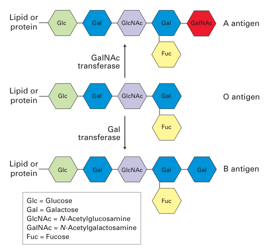
| A antigen | A抗原 |
| B antigen | B抗原 |
| O antigen | O抗原 |
| Glycosyltransferase | 糖基转移酶 |
| Galactose (Gal) | 半乳糖 |
| N-Acetylgalactosamine (GalNAc) | N-乙酰半乳糖胺 |
| N-Acetylglucosamine (GlcNAc) | N-乙酰葡糖胺 |
| Glucose (Glc) | 葡萄糖 |
| Fucose (Fuc) | 岩藻糖 |
| Oligosaccharide | 寡糖 |
| Glycolipid | 糖脂 |
细胞和许多其他细胞类型的表面（图7-20）。所有人类都有合成O抗原的酶。A型血的人还具有一种糖基转移酶，可将一种称为N-乙酰半乳糖胺的额外修饰单糖加到O抗原上形成A抗原。B型血的人具有一种不同的转移酶，可将一个额外的半乳糖加到O抗原上形成B抗原。同时具有这两种转移酶的人产生A和B两种抗原（AB血型）；缺乏这些转移酶的人只产生O抗原（O血型）。
红细胞表面缺乏A抗原、B抗原或两者兼有的人，其血清中通常含有针对所缺抗原的抗体。因此，如果A型或O型的人接受B型血输血，针对B抗原的抗体将结合到输入的红细胞上并触发其破坏。为防止这类有害
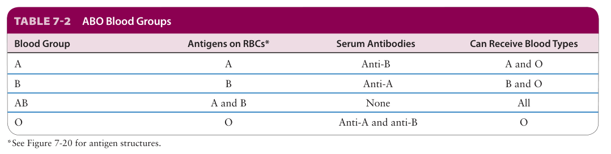
| ABO blood group | ABO血型 |
| Antigen | 抗原 |
| Serum antibody | 血清抗体 |
| Anti-A | 抗A抗体 |
| Anti-B | 抗B抗体 |
| Red blood cell | 红细胞 |
反应，所有输血都必须进行血型鉴定并对供血者和受血者进行适当配型（表7-2）。■
脂质结合基序帮助将周边蛋白靶向到膜上
许多以磷脂为底物的水溶性酶必须结合到膜表面。例如，磷脂酶水解磷脂头基中的各种键（见图7-12），从而在细胞中发挥多种作用——帮助降解受损或老化的细胞膜、产生信号分子的前体，甚至作为许多蛇毒的活性成分。许多周边蛋白（包括磷脂酶）最初结合到膜磷脂的极性头基上以执行其催化功能。磷脂酶A2的作用机制说明了这类酶如何可逆地与膜相互作用，并在水溶液与脂质表面的界面处催化反应。当这种酶处于水溶液中时，其含Ca²⁺的活性位点埋藏在由疏水氨基酸衬里的通道中。该酶对由带负电荷的磷脂（如磷脂酰丝氨酸）组成的双层亲和力最大。这一观察提示，催化通道入口周围由带正电荷的赖氨酸和精氨酸残基构成的边缘在结合中特别重要（图7-21a），并构成一个脂质结合基序。结合诱导磷脂酶A2发生构象变化，增强其与磷脂头基的结合并打开疏水通道。当一个磷脂分子从双层进入通道时，酶结合的Ca²⁺与头基中的磷酸结合，从而将待切割的酯键定位在催化位点（图7-21b），释放出酰基链。
蛋白质可以通过去污剂或高盐溶液从膜上移除
膜蛋白通常难以纯化和研究，主要因为它们与膜脂质和其他膜蛋白紧密关联。去污剂是两亲性分子，通过
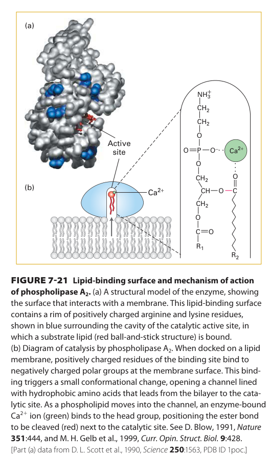
| Phospholipase A2 | 磷脂酶A2 |
| Active site | 活性位点 |
| Lipid-binding motif | 脂质结合基序 |
| Calcium ion | 钙离子 |
| Lysine | 赖氨酸 |
| Arginine | 精氨酸 |
| Phosphatidylserine | 磷脂酰丝氨酸 |
插入磷脂双层而破坏膜，可用于增溶脂质和许多膜蛋白。去污剂分子的疏水部分被磷脂烃吸引并容易与其混合；亲水部分则强烈地被水吸引。有些去污剂（如胆盐）是天然产物，但大多数是为清洁以及食品工业中分散油水混合物（如奶油花生酱）而开发的合成分子（图7-22）。离子型去污剂（如脱氧胆酸钠，一种胆盐，以及十二烷基硫酸钠SDS）含有一个带电基团；非离子型去污剂（如Triton X-100和辛基葡糖苷）则不含带电基团。在极低浓度下，去污剂以孤立分子形式溶于纯水。随着浓度增加，分子开始形成胶束——小的球形聚集体，其中分子的亲水部分朝外，疏水部分聚集在中心（见图7-3c）。形成胶束的临界胶束浓度（CMC）是每种去污剂的特征值，是其疏水部分和亲水部分结构的函数。
离子型和非离子型去污剂与蛋白质的相互作用不同，在实验室中有不同用途。离子型去污剂既结合膜蛋白暴露的疏水区域，也结合水溶性蛋白的疏水核心。由于其电荷，这些去污剂可以破坏离子键和氢键。例如，在高浓度下，十二烷基硫酸钠通过结合每一个侧链而使蛋白质完全变性，这一性质在SDS凝胶电泳中得到了利用（见图3-38）。非离子型去污剂一般不会使蛋白质变性，因此在蛋白质纯化之前，可用于从膜中以折叠且有活性的形式提取蛋白质。蛋白质-蛋白质相互作用，尤其是较弱的那些，对离子型和非离子型去污剂都可能敏感。
在高浓度（高于CMC）下，非离子型去污剂通过形成
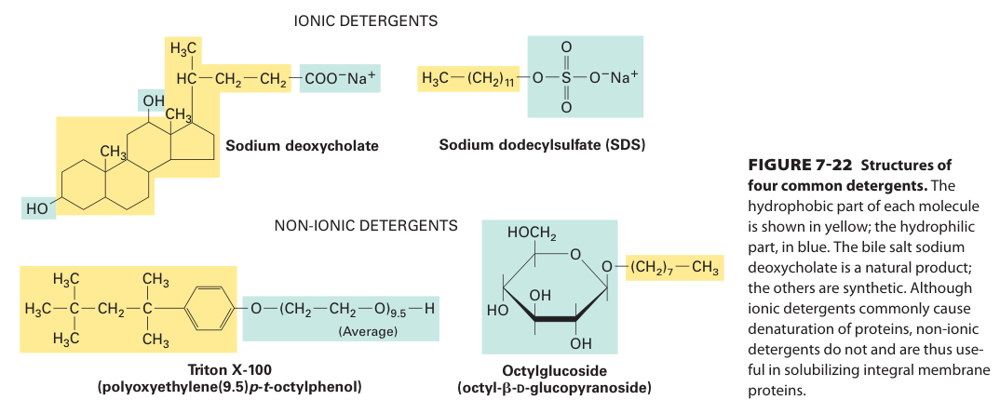
| Detergent | 去污剂 |
| Ionic detergent | 离子型去污剂 |
| Non-ionic detergent | 非离子型去污剂 |
| Sodium deoxycholate | 脱氧胆酸钠 |
| Sodium dodecylsulfate (SDS) | 十二烷基硫酸钠 |
| Triton X-100 | Triton X-100 |
| Octylglucoside | 辛基葡糖苷 |
| Bile salt | 胆盐 |
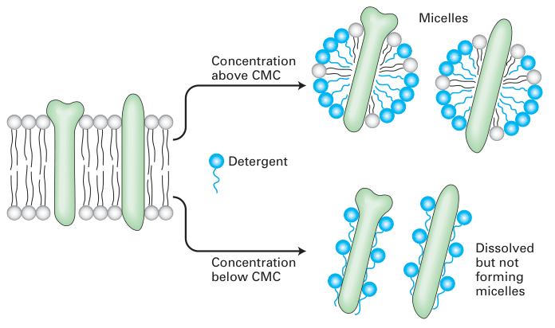
| Critical micelle concentration (CMC) | 临界胶束浓度 |
| Mixed micelle | 混合胶束 |
| Micelle | 胶束 |
| Solubilization | 增溶 |
| Integral membrane protein | 整合膜蛋白 |
去污剂、磷脂和整合膜蛋白的混合胶束来增溶生物膜，这些是体积庞大的疏水结构，不溶于水（图7-23，上）。在低浓度（低于CMC）下，这些去污剂结合大多数整合膜蛋白的疏水区域，但不形成胶束，从而使蛋白质保持可溶（图7-23，下）。制备这样的整合膜蛋白水溶液是蛋白质纯化必需的第一步。
用含有非离子型去污剂（如Triton X-100）的缓冲盐溶液处理培养细胞，可将水溶性蛋白以及整合膜蛋白从细胞膜中提取出来。如前所述，整合膜蛋白的外质结构域和胞质结构域通常是亲水的、可溶于水的。然而，跨膜结构域富含疏水和不带电残基（见图7-14）。当与膜分离时，这些暴露的疏水区段倾向于彼此相互作用，导致蛋白质分子聚集并从水溶液中沉淀出来。非离子型去污剂分子的疏水部分优先结合跨膜蛋白的疏水区段，防止蛋白质聚集并使蛋白质保持在水溶液中。去污剂增溶的跨膜蛋白随后可通过亲和层析以及用于纯化水溶性蛋白的其他技术进行纯化（见第3章）。
如前所述，大多数周边膜蛋白通过离子或其他弱非共价相互作用结合到特定的跨膜蛋白或膜磷脂上。一般来说，周边蛋白可以通过高离子强度溶液（高盐浓度，它破坏离子键）或通过结合二价阳离子（如Mg²⁺）的化学试剂从膜上移除。与整合膜蛋白不同，大多数周边蛋白可溶于水，无需用非离子型去污剂增溶。
- 生物膜通常含有整合（跨膜）蛋白，以及不进入双层疏水核心的脂锚定蛋白和周边膜蛋白（见图7-1）。
- 大多数整合膜蛋白含有一个或多个跨膜疏水α螺旋，其两侧是延伸到膜胞质面和外质面周围水性环境中的亲水结构域（见图7-14、7-15和7-17）。
- 膜脂质的脂肪酰基侧链以及极性头基紧密而不规则地堆积在整合膜蛋白的疏水区段周围（见图7-16）。
- 与其他整合膜蛋白不同，孔蛋白含有跨膜β片层，形成穿过双层的桶状通道（见图7-18）。
- 连接在某些氨基酸上的脂质将一些蛋白质锚定到膜的一层或另一层单层（见图7-19）。
- 所有跨膜蛋白和糖脂在双层中都是不对称取向的。糖链无例外地只存在于糖蛋白或糖脂的外质表面。
- 许多以磷脂为底物的水溶性酶（如磷脂酶）必须结合到膜表面才能执行其功能。这种结合通常是由于蛋白质中赖氨酸和精氨酸残基上的正电荷与双层中磷脂头基上的负电荷之间的吸引。
- 跨膜蛋白可用非离子型去污剂选择性地从膜中提取。
7.3 磷脂、鞘脂和胆固醇：合成与胞内运输
在本节中，我们考察细胞在合成和运输脂质时面临的一些特殊挑战，这些脂质在细胞的水性内部溶解性很差。我们讨论的重点将是细胞膜中主要脂质——磷脂、鞘脂和胆固醇——及其前体的生物合成与运输。在脂质生物合成中，水溶性前体被组装成膜相关的中间体，随后转变为膜脂质产物。这些脂质（尤其是膜成分）在不同细胞器之间的运输，对于维持膜的适当组成和性质以及整体细胞结构至关重要。
膜生物合成的一个基本原理是，细胞只通过现有膜的扩展来合成新膜。[唯一的例外可能是自噬，其中新膜首先通过形成自噬新月体而产生，其构建涉及用类泛素修饰物Atg8修饰磷脂酰乙醇胺（见图14-35）。]尽管膜脂质合成的某些早期步骤在胞质溶胶中进行，但最后步骤由结合在预先存在的细胞膜上的酶催化，产物一经生成即被整合到膜中。当细胞短暂暴露于放射性标记的前体（如磷酸或脂肪酸）时，可以看到这一过程的证据：所有掺入这些标记前体的磷脂和鞘脂都与胞内膜相关联；正如从脂肪酰基链的疏水性所预期的那样，没有一种游离存在于胞质溶胶中。
膜脂质形成后，必须在给定膜的两个单层之间、真核细胞不同细胞器的独立膜之间以及质膜之间进行适当分配。这里我们考察这种精确的脂质分配是如何实现的；在第13章和第14章，我们讨论膜蛋白如何被插入细胞膜并被运输到其在细胞内的适当位置。
脂肪酸由若干重要酶从二碳构建模块组装而成
脂肪酸（见第2章）在细胞中发挥若干重要作用。除了作为细胞燃料来源
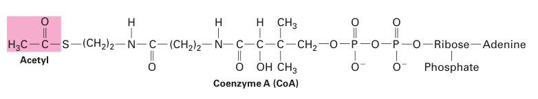
（见第12章关于有氧氧化的讨论）外，脂肪酸还是构成细胞膜的磷脂和鞘脂的关键成分；它们还将某些蛋白质锚定到细胞膜上（见图7-19）。因此，脂肪酸合成的调节在整体膜合成的调节中起关键作用。磷脂中的主要脂肪酸含有14、16、18或20个碳原子，包括饱和链和不饱和链。鞘脂上的脂肪酰基链可以比磷酸甘油酯中的更长，含有最多26个碳原子，并且还可能带有其他化学修饰（如羟基化）。
脂肪酸由二碳构建模块乙酸（CH₃COO⁻）合成。在细胞中，乙酸和脂肪酸生物合成的中间体都酯化到一个称为辅酶A（CoA）的大水溶性分子上，如乙酰CoA的结构所示（见下）。
乙酰CoA是葡萄糖、脂肪酸和许多氨基酸代谢中的重要中间体，详见第12章。它还在许多生物合成途径中提供乙酰基。含14或16个碳原子的饱和脂肪酸（无碳碳双键）由乙酰CoA通过两种酶——乙酰CoA羧化酶和脂肪酸合酶——制造。在动物细胞中，这些酶存在于胞质溶胶中；在植物中，它们存在于叶绿体中。棕榈酰CoA（连接CoA的16碳脂肪酰基）可通过在内质网（ER）中或有时在线粒体中顺序添加二碳单位而延长至18–24个碳。同样位于ER中的去饱和酶在某些脂肪酸的特定位置引入双键，产生不饱和脂肪酸。例如，油酰CoA（连接CoA的油酸；见表2-4）由硬脂酰CoA脱去两个H原子形成。与游离脂肪酸不同，脂肪酰基CoA衍生物由于CoA部分的亲水性而可溶于水溶液。
小的胞质蛋白促进脂肪酸的移动
为了在细胞胞质溶胶中被运输，游离的或未酯化的脂肪酸（未连接CoA的那些）通常由脂肪酸结合蛋白（FABP）结合，FABP属于一组小的胞质蛋白，充当分子伴侣以促进许多脂质的胞内移动。这些蛋白质含有一个由β片层衬里的疏水口袋（图7-24）。长链脂肪酸可装入这个口袋，并与周围蛋白质发生非共价相互作用。
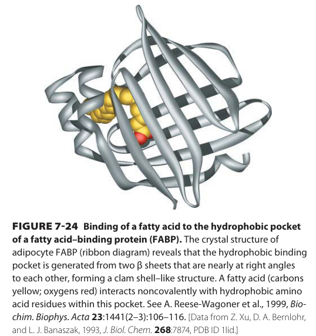
| Fatty acid-binding protein (FABP) | 脂肪酸结合蛋白 |
| Adipocyte | 脂肪细胞 |
| Hydrophobic pocket | 疏水口袋 |
| Beta sheet | β片层 |
细胞FABP的表达与细胞对脂肪酸摄取和释放的需求协同调节。因此，在使用脂肪酸生成ATP的活跃肌肉中，以及在脂肪细胞（储脂细胞）摄取
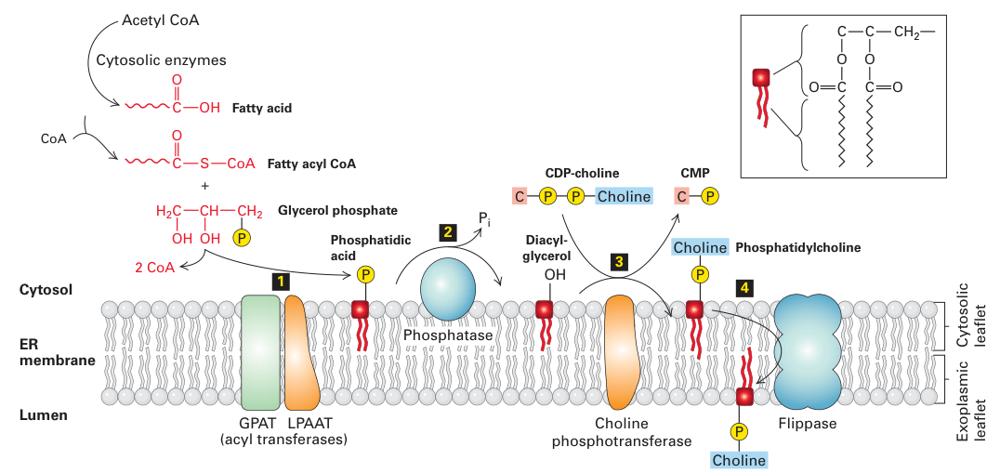
| Phosphatidic acid | 磷脂酸 |
| Diacylglycerol | 二酰甘油 |
| CDP-choline | CDP-胆碱 |
| Choline phosphotransferase | 胆碱磷酸转移酶 |
| Phosphatase | 磷酸酶 |
| Acyltransferase | 酰基转移酶 |
| Flippase | 翻转酶 |
| Cytosolic leaflet | 胞质单层 |
| Exoplasmic leaflet | 外质单层 |
| Glycerol phosphate | 磷酸甘油 |
脂肪酸以甘油三酯形式储存或释放脂肪酸供其他细胞使用时，FABP水平都很高。FABP在脂肪酸代谢中的重要性由以下观察凸显：它们在肝脏中可占全部胞质蛋白的5%；而心肌FABP的基因失活会将心脏从主要燃烧脂肪酸供能的肌肉转变为主要燃烧葡萄糖的肌肉。
脂肪酸主要在ER膜上被整合到磷脂中
脂肪酸并不直接被整合到磷脂中；相反，在真核细胞中，它们首先被转变为CoA酯。随后诸如磷酸甘油酯等磷脂的合成由与ER膜（在动物细胞中通常是滑面ER）胞质面相关联的酶完成；通过一系列步骤，脂肪酰基CoA、3-磷酸甘油和极性头基前体被连接在一起，然后插入ER膜（图7-25）。参与这一过程的酶位于膜胞质侧这一事实，意味着膜生物发生中存在固有的不对称性：新膜最初只在一个单层上合成——这一事实对膜单层中脂质的不对称分布具有重要影响。磷脂一旦在ER上合成，就被运输到其他细胞器和质膜。线粒体自己合成一部分膜脂质，并输入其他部分。
鞘脂也是由多种前体间接合成的。鞘氨醇（这些脂质的构建模块）在ER中制造，始于将棕榈酰CoA中的棕榈酰基偶联到丝氨酸上；随后添加第二条脂肪酰基形成N-酰基鞘氨醇（神经酰胺）也发生在ER中。之后在高尔基体中，一个极性头基被加到神经酰胺上，产生鞘磷脂（其头基是磷酸胆碱）以及各种糖鞘脂（其头基可以是单糖或更复杂的寡糖）（见图7-8b）。一些鞘脂合成也可在线粒体中发生。除了作为鞘脂的骨架外，神经酰胺及其代谢产物还是重要的信号分子，可影响细胞生长、增殖、内吞、抗逆性和程序性细胞死亡（凋亡）。
鞘脂在高尔基体中合成完成后，通过与蛋白质运输类似的囊泡介导机制被运输到其他细胞区室，见第14章。任何类型的囊泡运输不仅导致蛋白质货物移动，也导致构成囊泡膜的脂质移动。诸如磷酸甘油酯等磷脂以及胆固醇，可通过下文描述的其他机制在细胞器之间移动。
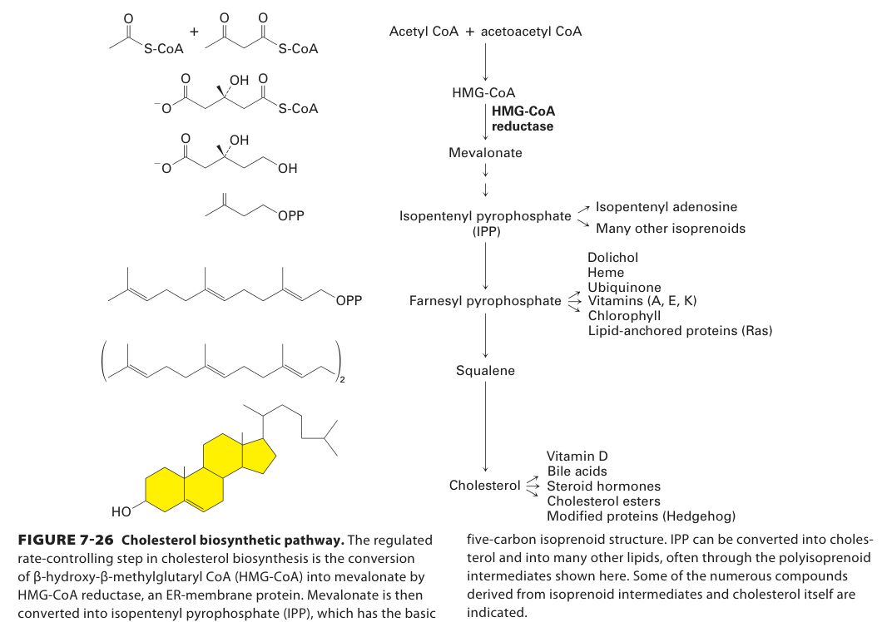
| HMG-CoA | HMG-CoA |
| HMG-CoA reductase | HMG-CoA还原酶 |
| Mevalonate | 甲羟戊酸 |
| Isopentenyl pyrophosphate (IPP) | 异戊烯基焦磷酸 |
| Farnesyl pyrophosphate | 法尼基焦磷酸 |
| Squalene | 角鲨烯 |
| Cholesterol | 胆固醇 |
| Bile acid | 胆汁酸 |
| Steroid hormone | 类固醇激素 |
| Dolichol | 多萜醇 |
| Ubiquinone | 泛醌 |
| Isoprenoid | 类异戊二烯 |
翻转酶将磷脂从膜的一层单层移到相对的单层
尽管磷脂最初被整合到ER膜的胞质单层，但各种磷脂在ER膜和其他细胞膜的两个单层中是不对称分布的。如上所述，磷脂不容易从一层单层翻转到另一层。为了使ER膜能通过两个单层的生长而扩展，并具有不对称分布的磷脂，其磷脂成分必须能够从一层单层移动到另一层。尽管用于产生和维持膜磷脂不对称性的机制尚不完全清楚，但翻转酶显然起着关键作用。如第11章所述，这些整合膜蛋白利用ATP水解的能量促进磷脂分子从一层单层移动到另一层（见图11-16）。
胆固醇由胞质溶胶和ER膜中的酶合成
接下来我们聚焦于胆固醇，动物细胞中的主要固醇。胆固醇主要在肝脏中合成。胆固醇合成的第一步（图7-26）——将
三个连接CoA的乙酰基（乙酰CoA）转变为连接CoA的六碳分子β-羟基-β-甲基戊二酰（HMG-CoA）——在胞质溶胶中进行。HMG-CoA转变为甲羟戊酸（胆固醇生物合成的关键限速步骤）由HMG-CoA还原酶催化，后者是一种ER整合膜蛋白，尽管其底物和产物都是水溶性的。HMG-CoA还原酶的水溶性催化结构域伸入胞质溶胶，但其八个跨膜α螺旋将该酶牢固地嵌入ER膜中。其中五个跨膜α螺旋构成所谓的固醇感应结构域并调节酶的稳定性。当ER膜中的胆固醇水平较高时，胆固醇与该结构域的结合使该酶结合到另外两种ER整合膜蛋白Insig-1和Insig-2上。这种结合进而诱导HMG-CoA还原酶的泛素化（见图3-31）及其通过蛋白酶体途径的降解，减少甲羟戊酸（胆固醇生物合成的关键中间体）的产生。
动脉粥样硬化常被称为胆固醇依赖性的动脉堵塞，其特征是胆固醇和其他脂质、细胞及细胞外基质物质在动脉壁内层进行性沉积。由此造成的动脉壁变形可单独或与血凝块共同导致血流的严重阻塞。在美国，动脉粥样硬化占心血管疾病死亡原因的75%。
也许最成功的抗动脉粥样硬化药物是他汀类。这些药物结合HMG-CoA还原酶并直接抑制其活性，从而降低胆固醇生物合成。其结果是，血液中低密度脂蛋白（见图14-27）——即含有酯化到脂肪酸上的胆固醇的小型膜包被颗粒，常被恰当地称为"坏胆固醇"——的浓度下降，减少了动脉粥样硬化斑块的形成。■
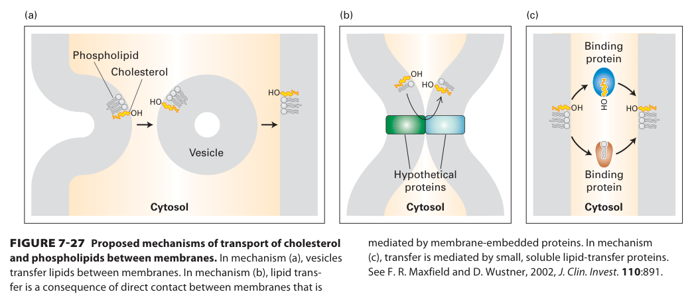
| Lipid-transfer protein | 脂质转移蛋白 |
| Vesicular transport | 囊泡运输 |
| Binding protein | 结合蛋白 |
| Phospholipid | 磷脂 |
| Cholesterol | 胆固醇 |
由HMG-CoA还原酶形成的六碳产物甲羟戊酸，经若干步骤转变为五碳类异戊二烯化合物异戊烯基焦磷酸（IPP）及其立体异构体二甲基烯丙基焦磷酸（DMPP）（见图7-26）。这些反应由胞质酶催化，胆固醇合成途径中随后的反应也是如此，其中六个IPP单元缩合产生角鲨烯，一种30碳的支链中间体。结合在ER膜上的酶催化将角鲨烯转变为哺乳动物中的胆固醇或其他物种中相关固醇的多个反应。该途径中的中间体之一法尼基焦磷酸，是将Ras及相关蛋白锚定到质膜胞质面的异戊二烯脂质的前体（见图7-19），也是其他重要生物分子的前体（见图7-26）。
胆固醇和磷脂通过若干机制在细胞器之间运输
如前所述，胆固醇和磷脂合成的最后步骤主要发生在ER中。因此，质膜和包围其他细胞器的膜必须通过一种或多种胞内运输过程获得这些脂质。膜脂质能够也的确伴随着可溶性蛋白和膜蛋白沿第14章描述的分泌途径移动：膜囊泡从ER出芽并与高尔基体中的膜融合，其他膜囊泡从高尔基体出芽并与质膜融合（图7-27a）。然而，若干证据表明，胆固醇和磷脂通过其他机制存在大量的细胞器间移动。例如，经典分泌途径的化学抑制剂以及阻碍沿该途径囊泡运输的突变，并不能阻止膜之间的胆固醇或磷脂运输。
第二种提出的脂质移动机制涉及ER或ER衍生膜与其他细胞器膜之间直接的蛋白质介导接触（图7-27b）。第三种提出的机制中，小的脂质转移蛋白促进不同膜之间磷脂或胆固醇的交换（图7-27c）。尽管这类脂质转移蛋白已在体外实验中被鉴定出来，但它们在大多数磷脂胞内移动中的作用尚未得到很好的界定。例如，编码磷脂酰胆碱转移蛋白的基因带有敲除突变的小鼠在大多数方面似乎正常，表明该蛋白质对细胞磷脂代谢并非必需。
如前所述，不同细胞器膜的脂质组成差异相当大（见表7-1）。其中一些差异归因于合成部位不同。例如，一种称为心磷脂的磷脂定位于线粒体膜，只在线粒体中制造，且很少转移到其他细胞器。脂质的差异性运输也在决定不同细胞膜的脂质组成中发挥作用。例如，尽管胆固醇在ER中制造，但质膜中的胆固醇浓度（胆固醇与磷脂的摩尔比）比其他细胞器（ER、高尔基体、线粒体、溶酶体）高1.5–13倍。尽管造成和维持这些差异的机制尚不很清楚，但我们已经看到，每种膜独特的脂质组成对其物理和生物学性质有重大影响。
- 各种链长的饱和和不饱和脂肪酸是磷脂和鞘脂的成分。
- 脂肪酸由水溶性酶从乙酰CoA合成，并在内质网（ER）中通过延长和去饱和作用加以修饰。
- 游离脂肪酸在细胞内由脂肪酸结合蛋白（FABP）运输。
- 脂肪酸通过多步过程被整合到磷脂中。磷酸甘油酯和鞘脂合成的最后步骤主要由ER胞质面上与膜相关联的酶催化（见图7-25）。
- 每种新合成的脂质都被整合到其生成所在的预先存在的膜中；因此，膜本身就是合成新膜材料的平台。
- 大多数膜磷脂优先分布在外质单层或胞质单层中。这种不对称性部分源于翻转酶的作用，后者将磷脂从一层单层翻到另一层。
- 胆固醇生物合成的初始步骤在胞质溶胶中进行，而最后步骤由与ER膜相关联的酶催化。
- 胆固醇生物合成的限速步骤由HMG-CoA还原酶催化，其跨膜区段嵌入ER膜并含有一个固醇感应结构域。
- 相当多的证据表明，囊泡运输、不同膜之间直接的蛋白质介导接触、可溶性脂质转移蛋白，或这三者共同，可能解释胆固醇和磷脂的部分细胞器间运输（见图7-27）。
访问LaunchPad获取学习工具并了解更多本章内容：展望未来、分析数据、附加学习工具（包括视频、动画和测验）
关键术语
复习题
- 1.用电子显微镜观察时，脂双层常被描述为看起来像铁轨。解释双层结构如何形成这一图像。
- 2.解释以下说法：所有生物膜的结构取决于磷脂的化学性质，而每种特定生物膜的功能则取决于与该膜相关联的特定蛋白质。
- 3.生物膜含有许多不同类型的脂质分子。生物膜中发现的三种主要类型脂质分子是什么？这三种类型有何相似之处，又有何不同？
- 4.据说脂双层的行为像二维流体。这是什么意思？是什么驱动了脂质分子和蛋白质在双层内的运动？这种运动如何测量？哪些因素影响膜的流动性程度？
- 5.为什么水溶性物质不能自由穿过质膜的脂双层？细胞如何克服这一通透性屏障？
- 6.说出膜相关蛋白可以被划分成的三个类别。解释每个类别与生物膜结合的机制。
- 7.根据结构鉴定下列膜相关蛋白：(a) 相同亚基的四聚体，每个亚基有六个跨膜α螺旋；(b) 相同亚基的三聚体，每个亚基有16条β链形成桶状结构。
- 8.蛋白质可以通过共价连接的脂质结合到质膜的外质面或胞质面。负责将蛋白质拴系到质膜双层的三类脂质锚是什么？面向外部介质的细胞表面蛋白使用哪一类？糖基化蛋白聚糖使用哪一类？
- 9.尽管生物膜的两个面都由相同的一般类型大分子（主要是脂质和蛋白质）组成，但双层的两个面并不相同。是什么造成了两个面之间的不对称性？
- 10.什么是去污剂？离子型和非离子型去污剂在破坏生物膜结构的能力上有何不同？
- 11.下列膜相关蛋白的可能身份是什么：(a) 一种用高盐溶液处理膜后从膜上释放的蛋白质，高盐溶液造成离子键断裂；(b) 一种仅暴露于高盐溶液时不会从膜上释放，但与切割磷酸-甘油键的酶共孵育、共价键被破坏后即被释放的蛋白质；(c) 一种暴露于高盐溶液时不会从膜上释放，但加入去污剂十二烷基硫酸钠（SDS）后被释放的蛋白质。(c) 中被释放的蛋白质的活性在其释放后会被保留吗？
- 12.使用非离子型去污剂Triton X-100制备膜提取物后，你通过质谱分析膜裂解物，注意到胆固醇和鞘脂含量很高。此外，裂解物的生化分析显示存在潜在的激酶活性。你很可能分离到了什么？
- 13.内质网（ER）与胞质溶胶界面处的磷脂生物合成提出了若干细胞必须解决的挑战。解释下列每一项是如何被处理的。
a. 磷脂生物合成的底物都是水溶性的，但终产物不是。
b. 所有新合成磷脂的直接整合位点是ER膜的胞质单层，但磷脂必须被整合到两个单层中。
c. 细胞中的许多膜系统，如质膜，无法合成自己的磷脂，但如果细胞要生长和分裂，这些膜也必须扩展。 - 14.磷酸甘油酯中常见的脂肪酸链有哪些，为什么这些脂肪酸链的碳原子数相差2的倍数？
- 15.脂肪酸必须与脂质伴侣结合才能在细胞内移动。为什么需要这些伴侣，负责这种脂肪酸胞内运输的一组蛋白质叫什么？这些蛋白质使脂肪酸得以在细胞内移动的关键区别性特征是什么？
- 16.胆固醇的生物合成是一个高度受调控的过程。胆固醇生物合成中的关键调节酶是什么？这种酶受反馈抑制的调节。什么是反馈抑制？这种酶如何感知细胞中的胆固醇水平？
- 17.磷脂和胆固醇必须从其合成部位运输到细胞内的各种膜系统。一种方式是通过囊泡运输，如经典分泌途径中许多蛋白质的情况（见第14章）。然而，细胞中磷脂和胆固醇的膜间运输并不完全通过囊泡运输发生。这一说法的证据是什么？磷脂和胆固醇运输的主要机制似乎是什么？
- 18.解释他汀类药物降低"坏"胆固醇的机制。
参考文献
The Lipid Bilayer: Composition and Structural Organization
McMahon, H., and J. L. Gallop. 2005. Membrane curvature and mechanisms of dynamic cell membrane remodeling. Nature 438:590–596.
Mukherjee, S., and F. R. Maxfield. 2004. Membrane domains. Annu. Rev. Cell Dev. Biol. 20:839–866.
Ploegh, H. 2007. A lipid-based model for the creation of an escape hatch from the endoplasmic reticulum. Nature 448:435–438.
Simons, K., and D. Toomre. 2000. Lipid rafts and signal trans- duction. Nat. Rev. Mol. Cell Biol. 1:31–41.
Simons, K., and W. L. C. Vaz. 2004. Model systems, lipid rafts, and cell membranes. Annu. Rev. Biophys. Biomol. Struct. 33:269–295.
Tamm, L. K., V. K. Kiessling, and M. L. Wagner. 2001. Membrane dynamics. Encyclopedia of Life Sciences. Nature Publishing Group.
Vance, D. E., and J. E. Vance. 2002. Biochemistry of Lipids, Lipoproteins, and Membranes, 4th ed. Elsevier.
Van Meer, G. 2006. Cellular lipidomics. EMBO J. 24:3159–3165.
Yeager, P. L. 2001. Lipids. Encyclopedia of Life Sciences. Na- ture Publishing Group.
Zimmerberg, J., and M. M. Kozlov. 2006. How proteins pro- duce cellular membrane curvature. Nat. Rev. Mol. Cell Biol. 7:9–19.
Membrane Proteins: Structure and Basic Functions
Bowie, J. 2005. Solving the membrane protein folding problem. Nature 438:581–589.
Cullen, P. J., G. E. Cozier, G. Banting, and H. Mellor. 2001. Modular phosphoinositide-binding domains: their role in signalling and membrane trafficking. Curr. Biol. 11:R882–R893.
Engelman, D. 2005. Membranes are more mosaic than fluid. Nature 438:578–580.
Lanyi, J. K., and H. Luecke. 2001. Bacteriorhodopsin. Curr. Opin. Struct. Biol. 11:415–519.
Lee, A. G. 2005. A greasy grip. Nature 438:569–570.
MacKenzie, K. R., J. H. Prestegard, and D. M. Engelman. 1997. A transmembrane helix dimer: structure and implications. Science 276:131–133.
McIntosh, T. J., and S. A. Simon. 2006. Roles of bilayer mate- rial properties in function and distribution of membrane proteins. Annu. Rev. Biophys. Biomol. Struct. 35:177–198.
Schulz, G. E. 2000. β-Barrel membrane proteins. Curr. Opin. Struct. Biol. 10:443–447.
Wucherpfennig, K. W., et al. 2010. Cold Spring Harb. Perspect. Biol. 2:a005140.
Phospholipids, Sphingolipids, and Cholesterol: Synthesis and Intracellular Movement
Bloch, K. 1965. The biological synthesis of cholesterol. Science 150:19–28.
Daleke, D. L., and J. V. Lyles. 2000. Identification and puri- fication of aminophospholipid flippases. Biochim. Biophys. Acta 1486:108–127.
Futerman, A., and H. Riezman. 2005. The ins and outs of sphingolipid synthesis. Trends Cell Biol. 15:312–318.
Hajri, T., and N. A. Abumrad. 2002. Fatty acid transport across membranes: relevance to nutrition and metabolic pathology. Annu. Rev. Nutr. 22:383–415.
Henneberry, A. L., M. M. Wright, and C. R. McMaster. 2002. The major sites of cellular phospholipid synthesis and molecular determinants of fatty acid and lipid head group specificity. Mol. Biol. Cell 13:3148–3161.
Holthuis, J. C. M., and T. P. Levine. 2005. Lipid traffic: floppy drives and a superhighway. Nat. Rev. Mol. Cell Biol. 6:209–220.
Ioannou, Y. A. 2001. Multidrug permeases and subcellular cho- lesterol transport. Nature Rev. Mol. Cell Biol. 2:657–668.
Kent, C. 1995. Eukaryotic phospholipid biosynthesis. Annu. Rev. Biochem. 64:315–343.
Maxfield, F. R., and I. Tabas. 2005. Role of cholesterol and lipid organization in disease. Nature 438:612–621.
Stahl, A., et al. 2001. Fatty acid transport proteins: a current view of a growing family. Trends Endocrin. Met. 12(6):266–273.
van Meer, G., and H. Sprong. 2004. Membrane lipids and vesicular traffic. Curr. Opin. Cell Biol. 16:373–378.